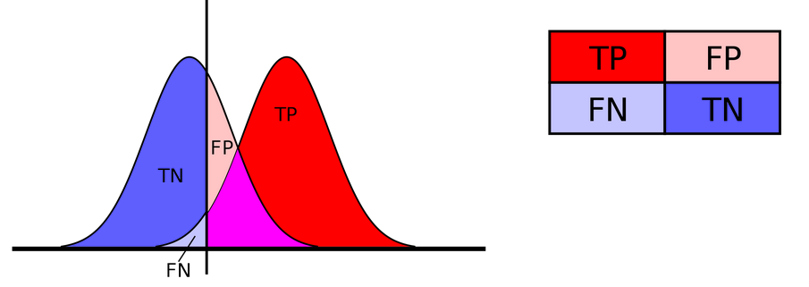

Foundational Aspects of Machine Learning using Python
Under Development!
This tutorial is not in its final state. The content may change a lot in the next months. Because of this status, it is also not listed in the topic pages.
| Author(s) |
|
| Editor(s) |
|
| Reviewers |
|
OverviewQuestions:
Objectives:
How can we use Machine-Learning to make more generalizable models?
What are the key components of a supervised learning problem, and how do they influence model performance?
How do classification and regression tasks differ in supervised learning, and what types of models are suitable for each?
What strategies can we employ to ensure our Machine Learning models generalize well to unseen data?
How can we use Machine Learning to make more generalizable models that perform well on diverse datasets?
What are some practical steps for applying Machine Learning to real-world datasets, such as the transcriptomics dataset for predicting potato coloration?
Requirements:
Understand and apply the general syntax and functions of the scikit-learn library to implement basic Machine Learning models in Python.
Identify and explain the concepts of overfitting and underfitting in Machine Learning models, and discuss their implications on model performance.
Analyze the need for regularization techniques and justify their importance in preventing overfitting and improving model generalization.
Evaluate the effectiveness of cross-validation and test sets in assessing model performance and implement these techniques using scikit-learn.
Compare different evaluation metrics and select appropriate metrics for imbalanced datasets, ensuring accurate and meaningful model assessment.
- tutorial Hands-on: Introduction to Python
- tutorial Hands-on: Python - Warm-up for statistics and machine learning
Time estimation: 3 hoursLevel: Intermediate IntermediateSupporting Materials:Published: Mar 11, 2025Last modification: Apr 30, 2025License: Tutorial Content is licensed under Creative Commons Attribution 4.0 International License. The GTN Framework is licensed under MITpurl PURL: https://gxy.io/GTN:T00524version Revision: 2
Best viewed in a Jupyter NotebookThis tutorial is best viewed in a Jupyter notebook! You can load this notebook one of the following ways
Run on the GTN with JupyterLite (in-browser computations)
Launching the notebook in Jupyter in Galaxy
- Instructions to Launch JupyterLab
- Open a Terminal in JupyterLab with File -> New -> Terminal
- Run
wget https://training.galaxyproject.org/training-material/topics/statistics/tutorials/intro-to-ml-with-python/statistics-intro-to-ml-with-python.ipynb- Select the notebook that appears in the list of files on the left.
Downloading the notebook
- Right click one of these links: Jupyter Notebook (With Solutions), Jupyter Notebook (Without Solutions)
- Save Link As..
Machine Learning is a subset of artificial intelligence that involves training algorithms to learn patterns from data and make predictions or decisions without being explicitly programmed. It has revolutionized various fields, from healthcare and finance to autonomous vehicles and natural language processing.
This tutorial is designed to equip you with essential knowledge and skills in Machine Learning, setting a strong foundation for exploring advanced topics such as Deep Learning.
The objective of this tutorial is to introduce you to some foundational aspects of Machine Learning which are key to delve in other topics such as Deep Learning. Our focus will be on high-level strategies and decision-making processes related to data and objectives, rather than delving into the intricacies of specific algorithms and models. This approach will help you understand the broader context and applications of Machine Learning.
We will concentrate on supervised learning, where the goal is to predict a “target” variable based on input data. In supervised learning, the target variable can be:
- Categorical: In this case, we are performing classification, where the objective is to assign input data to predefined categories or classes.
- Continuous: Here, we are conducting regression, aiming to predict a continuous value based on the input data.
While classification and regression employ different models and evaluation metrics, many of the underlying strategies and principles are shared across both types of tasks.
In this tutorial, we will explore a practical example using a transcriptomics dataset to predict phenotypic traits in potatoes, specifically focusing on potato coloration. The dataset has been pre-selected and normalized to include the 200 most promising genes out of approximately 15,000, as proposed by Acharjee et al. 2016. This real-world application will help you understand how to apply Machine Learning techniques to solve practical problems.
AgendaIn this tutorial, we will cover:
Prepare resources
Let’s start by preparing the environment
Install dependencies
The first step is to install the required dependencies if they are not already installed:
!pip install matplotlib
!pip install numpy
!pip install pandas
!pip install seaborn
!pip install scikit-learn
Import tools
Let’s now import them.
import matplotlib.pylab as pylab
import matplotlib.pyplot as plt
import numpy as np
import pandas as pd
import seaborn as sns
Configure for plotting
For plotting, we will use Matplotlib, a popular plotting library in Python. We would like to customize the appearance of plots to enhance readability and ensure that all plots generated during the tutorial will have a consistent and professional appearance, making them easier to read and interpret:
pylab.rcParams["figure.figsize"] = 5, 5
plt.rc("font", size=10)
plt.rc("xtick", color="k", labelsize="medium", direction="in")
plt.rc("xtick.major", size=8, pad=12)
plt.rc("xtick.minor", size=8, pad=12)
plt.rc("ytick", color="k", labelsize="medium", direction="in")
plt.rc("ytick.major", size=8, pad=12)
plt.rc("ytick.minor", size=8, pad=12)
QuestionWhat are the above commands doing?
pylab.rcParams["figure.figsize"] = 5, 5: Sets the default figure size to 5x5 inches. This ensures that all plots generated will have a consistent size unless otherwise specified.plt.rc("font", size=10): Sets the default font size for all text elements in the plots to 10. This includes titles, labels, and tick marks.plt.rc("xtick", color="k", labelsize="medium", direction="in"): Configures the x-axis ticks:
color="k": Sets the tick color to black.labelsize="medium": Sets the label size to medium.direction="in": Sets the direction of the ticks to point inward.plt.rc("xtick.major", size=8, pad=12): Configures the major x-axis ticks:
size=8: Sets the length of the major ticks to 8 points.pad=12: Sets the padding between the tick labels and the plot to 12 points.- *
plt.rc("xtick.minor", size=8, pad=12): Configures the minor x-axis ticks with the same settings as the major ticks:
size=8: Sets the length of the minor ticks to 8 points.pad=12: Sets the padding between the tick labels and the plot to 12 points.plt.rc("ytick", color="k", labelsize="medium", direction="in"): Configures the y-axis ticks with the same settings as the x-axis ticks:
color="k": Sets the tick color to black.labelsize="medium": Sets the label size to medium.direction="in": Sets the direction of the ticks to point inward.plt.rc("ytick.major", size=8, pad=12): Configures the major y-axis ticks:
size=8: Sets the length of the major ticks to 8 points.pad=12: Sets the padding between the tick labels and the plot to 12 points.plt.rc("ytick.minor", size=8, pad=12): Configures the minor y-axis ticks with the same settings as the major ticks:
size=8: Sets the length of the minor ticks to 8 points.pad=12: Sets the padding between the tick labels and the plot to 12 points.
Get data
Let’s now get the data. As mentioned in the introduction, we will use data from Acharjee et al. 2016 where they used transcriptomics dataset to predict potato coloration. The dataset has been pre-selected and normalized to include the 200 most promising genes out of approximately 15,000.
First, let’s import the metadata of the studied potatoes:
file_metadata = "https://github.com/sib-swiss/statistics-and-machine-learning-training/raw/refs/heads/main/data/potato_data.phenotypic.csv"
df = pd.read_csv(file_metadata, index_col=0)
Question
- How many potatoes and metadata do we have?
- In which column is the color information?
Let’s get the dimension of the dataframe:
df.shapeThe dimension of the dataframe is 86 rows and 8 columns. So there are 86 potatoes and 8 metadata for each.
Flesh Colourcolumn
For the sake of our story, we will imagine that out of the 86 potatoes in the data, we have only 73 at the time of our experiment. We put aside the rest for later.
i1 = df.index[:73]
i2 = df.index[73:]
We are interested in the colors of the potatoes, stored in the Flesh Colour column:
y = df.loc[i1, "Flesh Colour"]
Questiony.describe()count 73.000000 mean 24.473845 std 12.437785 min 6.992000 25% 13.484500 50% 24.746500 75% 30.996200 max 57.035100 Name: Flesh Colour, dtype: float64
- How many entries are non-null?
- What is the average value of the dataset?
- What is the standard deviation?
- What is the minimum value?
- What is the first quartile (25th percentile)?
- What is the median (50th percentile)?
- What is the third quartile (75th percentile)?
- What is the maximum value?
- 73
- mean = 24.47
- std = 12.44
- min = 6.992000
- 25% = 13.484500
- 50% = 24.746500
- 75% = 30.996200
- max = 57.035100
Let’s look at the distribution of the values:
sns.histplot(y)
We can now import transcriptomic data for the 200 selected genes in the 86 potatoes:
file_data = "https://github.com/sib-swiss/statistics-and-machine-learning-training/raw/refs/heads/main/data/potato_data.transcriptomic.top200norm.csv"
dfTT = pd.read_csv(file_data, index_col=0)
We keep only the 73 potatoes:
X = dfTT.loc[i1, :]
QuestionHow does the transcriptomic data look like?
X.head()
Genotype 0 1 2 3 4 5 6 7 8 9 … 190 191 192 193 194 195 196 197 198 199 CE017 0.086271 -0.790631 -0.445972 0.788895 0.510650 0.626438 0.829346 0.432200 -1.344748 1.794652 … -0.754008 -0.013125 0.852473 1.067286 0.877670 0.537247 1.251427 1.052070 -0.135479 -0.526788 CE069 -0.540687 0.169014 0.282120 -1.107200 -1.200370 0.518986 1.027663 -0.374142 -0.937715 1.488139 … -0.237367 0.684905 1.460319 -1.570253 0.547969 0.635307 0.257955 1.043724 0.733218 -1.768250 CE072 -1.713273 -1.400956 -1.543058 -0.930367 -1.058800 -0.455020 -1.302403 -0.110293 -0.332380 -0.232460 … -0.131733 -0.070336 0.821996 -1.566652 0.914053 -1.707726 0.498226 -1.500588 0.361168 -1.020456 CE084 -0.096239 -0.599251 -1.499636 -0.847275 -1.171365 -0.952574 -1.347691 0.561542 -0.335009 -0.702851 … -0.729461 0.135614 1.074398 0.629679 -0.691100 -1.247779 0.167965 -1.525064 0.150271 0.105746 CE110 -0.712374 -1.081618 -1.530316 -1.259747 -1.109999 -0.582357 -1.233085 0.008014 -0.915632 -0.746339 … -0.054882 0.363344 0.720155 0.465315 1.450199 -1.706606 0.602451 -1.507727 -2.207455 -0.139036 It is a tabular file with 73 rows and 201 columns. For each gene (column) and potatoes (row), we get the expression value of the gene
Linear regression
Linear regression is one of the most fundamental and widely used techniques in supervised Machine Learning. It is employed to model the relationship between a dependent variable (target) and one or more independent variables (features). The primary goal of linear regression is to fit a linear equation to observed data, enabling predictions and insights into the relationships between variables.
Approach 1: Simple linear regression
Let’s start by fitting a simple linear model with our gene expression values, and see what happens.
We start by importing elements from sklearn, a widely used library for Machine Learning in Python:
from sklearn.linear_model import LinearRegression
With
from sklearn.linear_model import LinearRegression, we import theLinearRegressionclass from thelinear_model moduleofscikit-learn.LinearRegressionis used to create and train a linear regression model. It fits a linear equation to the observed data, allowing you to make predictions based on the relationship between the independent variables (features) and the dependent variable (target).
We now:
- Create an instance of the
LinearRegressionclass that will be used to fit the linear regression model to our data - Train the linear regression model using the training data:
X: the input feature matrix, where each row represents a sample and each column represents a feature, here a gene and its expressiony: the target vector, containing the values you want to predict, i.e. the flest color
- Use the trained linear regression model to make predictions on the same input data
X
lin_reg = LinearRegression()
lin_reg.fit(X, y)
y_pred = lin_reg.predict(X)
The next step is to evaluate the prediction using two evaluation metrics from the metrics module of scikit-learn:
r2_score: This function calculates the R-squared (coefficient of determination) score, which indicates how well the independent variables explain the variance in the dependent variable. An R-squared value of 1 indicates a perfect fit, while a value of 0 indicates that the model does not explain any of the variance.mean_squared_error: This function calculates the mean squared error (MSE), which measures the average of the squares of the errors—that is, the average squared difference between the observed actual outcomes and the outcomes predicted by the model. Lower values of MSE indicate better model performance.
from sklearn.metrics import r2_score, mean_squared_error
print(f"R-squared score: { r2_score(y ,y_pred ) :.2f}")
print(f"mean squared error: { mean_squared_error(y ,y_pred ) :.2f}")
Question
- What is the value of the R-squared score?
- What is the value of the mean squared error?
R-squared score: 1.00mean squared error: 0.00
Wow!! this is a perfect fit. But if you know anything about biology, or data analysis, then you likely suspect something wrong is happening.
The main library we will be using for machine learning is scikit-learn.
It should go without saying that if you have any questions regarding its usage and capabilities, your first stop should be their website,especially since it provides plenty of examples, guides, and tutorials.
Nevertheless, we introduce here the most common behavior of
sklearnobject.Indeed,
sklearnimplement machine learning algorithms (random forest, clustering algorithm,…), as well as all kinds of preprocessers (scalin, missing value imputation,…) with a fairly consistent interface.Most methods must first be instanciated as an object from a specific class:
## import the class, here RandomForestClassifier from sklearn.ensemble import RandomForestClassifier ## instanciate the class object: my_clf = RandomForestClassifier()As it stands, the object is just a “naive” version of the algorithm.
The next step is then to feed the object data, so it can learn from it. This is done with the
.fitmethod:my_clf.fit( X , y )CommentIn this context,
Xis the data andyis the objective to attain. When the object is not an ML algorithm but a preprocessor, you only give theXNow that the object has been trained with your data, you can use it. For instance, to:
.transformyour data (typically in the case of a preprocessor):X_scaled = myScaler.transform(X) # apply a transformation to the data
.predictsome output from data (typically in the case of an ML algorithm, like a classifier)y_predicted = clf.predict(X) # predict classes of the training dataLast but not least, it is common in example code to “fit and transform” a preprocesser in the same line using ` .fit_transform`
X_scaled = myNaiveScaler.fit_transform(X) # equivalent to myNaiveScaler.fit(X).transform(X)That’s the basics. You will be able to experiment at length with this and go well beyond it.
Back to our potato model. At the moment, our claim is that our model can predict flesh color perfectly (RMSE=0.0) from the normalized expression of these 200 genes. But, say we now have some colleagues who come to us with some new potato data (the leftover data points)
Xnew = dfTT.loc[i2, :]
ynew = df.loc[i2, "Flesh Colour"]
We apply the model on the new data
ynew_pred = lin_reg.predict(Xnew)
QuestionHow is the prediction in term of R-squared score and mean squared error?
print(f"new data R-squared score: { r2_score( ynew , ynew_pred ) :.2f}") print(f"new data mean squared error: { mean_squared_error( ynew , ynew_pred ) :.2f}")new data R-squared score: 0.47 new data mean squared error: 130.47The values are not really good.
To compare observed values to predicted values, we can generate a scatter plot that visualizes the relationship between observed and predicted values for both training and new data:
plt.scatter(y, y_pred, label="training data")
plt.scatter(ynew, ynew_pred, label="new data")
plt.xlabel("observed values")
plt.ylabel("predicted values")
plt.legend()
![Scatter plot comparing predicted values to observed values. The x-axis represents observed values ranging from 0 to 60, and the y-axis represents predicted values ranging from -10 to 60. The plot includes two sets of data points: blue dots labeled as 'training data' and orange dots labeled as 'new data.' The blue training data points form a tight cluster along a diagonal line from the bottom-left to the top-right, indicating a strong linear relationship between observed and predicted values. The orange new data points are more scattered around the diagonal line, showing varying degrees of deviation from the perfect prediction line.](images/outputs/output_15_1.png)
As expected, the performance on the new data is not as good as with the data we used to train the model. We have overfitted the data.
Here, we could still use the model that we have created, but we would agree that reporting the perfect performance we had with our training data would be misleading. To honestly report the performance of our model, we measure it on a set of data that has not been used at all to train it: the test set.
To that end, we typically begin by dividing our data into:
- train set to find the best model
- test set to give an honest evaluation of how the model perform on completely new data.
![Diagram illustrating the division of data into train and test sets. The diagram is divided into two main sections labeled 'train set' and 'test set.' The 'train set' is represented by a larger red rectangle on the left, with an annotation pointing to it that reads 'Finding the data related parameters of a particular model.' The 'test set' is represented by a smaller blue rectangle on the right, with an annotation pointing to it that reads 'Checking the value of our model on unseen data.' Below both rectangles, there is a horizontal line labeled 'DATA,' indicating the entire dataset. The train set is used for training the model, while the test set is used for evaluating the model's performance on unseen data.](images/train_test.png)
X_test = Xnew
y_test = ynew
Approach 2: Adding regularization and validation set
In the case of a Least Square fit, the function we are minimizing corresponds to the sum of squared difference between the observation and the predictions of our model:
\( \sum_i (y_i-f(\pmb X_i,\pmb{\beta}))^2 \)
with \(y\) the target vector, \(\pmb X\) the input feature matrix and \(f\) our model
Regularization is a way to reduce overfitting. In the case of the linear model we do so by adding to this function a penalization term which depends on coefficient weights. In brief, the stronger the coefficient, the higher the penalization. So only coefficients which bring more fit than penalization will be kept.
The formulas used in scikit-learn functions -other libraries may have a different parameterization, but the concepts stay the same- are:
-
L1 regularization (Lasso): \(\frac{1}{2n}\sum_i (y_i-f(\pmb X_i,\pmb{\beta}))^2 + \alpha\sum_{j}\lvert\beta_{j}\rvert\), with \(\alpha\) being the weight that you put on that regularization
-
L2 regularization (Ridge): \(\sum_i (y_i-f(\pmb X_i,\pmb{\beta}))^2 + \alpha\sum_{j}\beta_{j}^{2}\)
-
Elastic Net: \(\frac{1}{2n}\sum_i (y_i-f(\pmb X_i,\pmb{\beta}))^2 + \alpha\sum_{j}(\rho\lvert\beta_{j}\rvert+\frac{(1-\rho)}{2}\beta_{j}^{2})\)
CommentFor a deeper understanding of those notions, you may look at :
CommentRegularization generalize to maximum likelihood contexts as well
Let’s try that on our data.
We start by importing the SGDRegressor class from the linear_model module of the scikit-learn library. SGDRegressor stands for Stochastic Gradient Descent Regressor. It is an implementation of linear regression that uses Stochastic Gradient Descent (SGD) to fit the model. SGD is an optimization algorithm that updates the model parameters iteratively based on one sample at a time (or a mini-batch of samples), making it efficient for large datasets. It supports various types of regularization (L1, L2, Elastic Net) to prevent overfitting.
from sklearn.linear_model import SGDRegressor
We would like now to perform a grid search over 50 different values – logarithmically spaced between \(10^{−2}\) and \(10^2\) – of the regularization parameter alpha for an SGDRegressor with L1 penalty (Lasso regression). The results will be stored in a DataFrame for further analysis.
%%time
logalphas = []
coef_dict = {
"name": [],
"coefficient": [],
"log-alpha": [],
}
r2 = []
for alpha in np.logspace(-2, 2, 50):
reg = SGDRegressor(penalty="l1", alpha=alpha)
reg.fit(X , y)
logalphas.append(np.log10(alpha))
r2.append(r2_score(y, reg.predict(X)))
coef_dict["name"] += list(X.columns)
coef_dict["coefficient"] += list(reg.coef_)
coef_dict["log-alpha"] += [np.log10(alpha)]* len(X.columns)
coef_df = pd.DataFrame(coef_dict)
Let’s visualize:
fig,ax = plt.subplots(1, 2, figsize=(14,7))
ax[0].plot(logalphas, r2)
ax[0].set_xlabel("log10( alpha )")
ax[0].set_ylabel("R2")
sns.lineplot(
x="log-alpha",
y="coefficient",
hue="name",
data=coef_df,
ax=ax[1],
legend = False,
)
fig.suptitle("Regression of potato data with an L1 regularization.")
![Figure showing the results of regression analysis on potato data with L1 regularization. The figure consists of two subplots. The left subplot is a line graph with the x-axis labeled 'log10(alpha)' ranging from -2.0 to 2.0, and the y-axis labeled 'R2' ranging from 0.0 to 1.0. It displays a blue curve that starts near the top left, remains high and relatively stable for lower values of log10(alpha), and then sharply drops to near zero as log10(alpha) increases, indicating a decrease in the R-squared score with higher alpha values. The right subplot is a line graph with the x-axis labeled 'log-alpha' ranging from -2.0 to 2.0, and the y-axis labeled 'coefficient' ranging from -2 to 2. It shows multiple colored lines, each representing the coefficient path of a different feature as log-alpha varies. The lines start spread out and converge towards zero as log-alpha increases, illustrating how coefficients shrink with increasing regularization. The title of the figure reads 'regression of potato data with an L1 regularization.'.](images/outputs/output_21_1.png)
Question
- What is in the left subplot?
- How to iterpret the left subplot?
- What is in the right subplot?
- how to iterpret the right subplot?
- The left subplot shows R-squared (\(R^2\)) vs. \(\log10(\alpha)\)
- Interpretation
- High \(R^2\) at Low \(\alpha\): At lower values of \(\log10(\alpha)\) (left side of the plot), the R-squared score is high, indicating that the model fits the data well. This is because the regularization is weak, allowing more features to contribute to the model.
- Sharp Drop in \(R^2\): As \(\log10(\alpha)\) increases, the R-squared score drops sharply. This indicates that stronger regularization (higher alpha values) leads to a simpler model with fewer features, which may not capture the data’s variance as well.
- Optimal Alpha: The point where the R-squared score starts to drop significantly can be considered as the optimal alpha value, balancing model complexity and performance.
- The right subplot shows Coefficients vs. log-alpha
- Interpretation:
- Coefficient Paths: Each colored line represents the path of a coefficient for a specific feature as log-alpha varies.
- Shrinkage to Zero: As log-alpha increases, many coefficients shrink towards zero. This is the effect of L1 regularization, which penalizes the absolute size of the coefficients, leading to sparse models where many coefficients become exactly zero.
- Feature Selection: Features with coefficients that shrink to zero first are less important for the model. Features whose coefficients remain non-zero for higher values of log-alpha are more important.
- Stability: The spread of the lines at lower log-alpha values indicates that the model includes many features. As log-alpha increases, the lines converge, showing that the model becomes simpler and more stable.
Hands OnAdapt the code above to generate this plot with an L2 penalty.
### correction from sklearn.linear_model import SGDRegressor logalphas = [] coef_dict = { "name": [], "coefficient": [], "log-alpha": [], } r2 = [] for alpha in np.logspace(-2, 2, 50): reg = SGDRegressor(penalty="l2", alpha=alpha) reg.fit(X, y) logalphas.append(np.log10(alpha)) r2.append(r2_score(y, reg.predict(X))) coef_dict["name"] += list(X.columns) coef_dict["coefficient"] += list(reg.coef_) coef_dict["log-alpha"] += [np.log10(alpha)]* len(X.columns ) coef_df = pd.DataFrame(coef_dict) fig,ax = plt.subplots(1, 2, figsize=(14,7)) ax[0].plot(logalphas, r2) ax[0].set_xlabel("log10( alpha )") ax[0].set_ylabel("R2") sns.lineplot( x="log-alpha", y="coefficient", hue="name", data=coef_df, ax = ax[1], legend = False ) fig.suptitle("regression of potato data with an L2 regularization.")Question
- How do each type of regularization affect R-squared (R²)?
- How do each type of regularization affect Coefficients?
- We look at the left Subplot: R-squared (R²) vs. log10(alpha).
- L1 Regularization (Lasso): The R-squared score starts high and remains relatively stable for lower values of log10(alpha), then sharply drops to near zero as log10(alpha) increases. L1 regularization tends to drive many coefficients to exactly zero, effectively performing feature selection. As alpha increases, more features are excluded from the model, leading to a simpler model with fewer features and a sharp drop in R-squared score.
- L2 Regularization (Ridge): The R-squared score starts high and gradually decreases with some fluctuations as log10(alpha) increases. L2 regularization penalizes the squared magnitude of the coefficients, leading to a more gradual shrinkage of coefficients. This results in a smoother decrease in the R-squared score as alpha increases, without the sharp drop seen in L1 regularization.
- Right Subplot: Coefficients vs. log-alpha
- L1 Regularization (Lasso): The coefficient paths show many lines shrinking to zero as log-alpha increases, indicating that many features are excluded from the model. L1 regularization performs feature selection by driving less important feature coefficients to zero. This results in a sparse model where only a few features have non-zero coefficients.
- L2 Regularization (Ridge): The coefficient paths show a more gradual shrinkage towards zero as log-alpha increases, with fewer coefficients becoming exactly zero.L2 regularization retains all features in the model but shrinks their coefficients. This results in a model where all features contribute, but their contributions are reduced.
![Figure showing the results of regression analysis on potato data with L2 regularization. The figure consists of two subplots. The left subplot is a line graph with the x-axis labeled 'log10(alpha)' ranging from -2.0 to 2.0, and the y-axis labeled 'R2' ranging from 0.3 to 1.0. It displays a blue curve that starts near the top left, remains relatively high and stable for lower values of log10(alpha), and then gradually decreases with some fluctuations as log10(alpha) increases, indicating a decrease in the R-squared score with higher alpha values. The right subplot is a line graph with the x-axis labeled 'log-alpha' ranging from -2.0 to 2.0, and the y-axis labeled 'coefficient' ranging from -2 to 2. It shows multiple colored lines, each representing the coefficient path of a different feature as log-alpha varies. The lines start spread out and gradually converge towards zero as log-alpha increases, illustrating how coefficients shrink with increasing regularization. The title of the figure reads 'regression of potato data with an L2 regularization.'.](images/outputs/output_23_1.png)
This is great, but how do we choose which level of regularization we want ?
It is a general rule that as you decrease \(\alpha\), the \(R^2\) on the data used for the fit increase, i.e. you risk overfitting. Consequently, we cannot choose the value of \(\alpha\) parameter from the data used to fit alone. We call such a parameter an hyper-parameter.
QuestionWhat are other hyper-parameters we could optimize at this point?
If we used an Elastic Net penalty, we would also have the L1 ratio to explore
But we could also explore which normalization method we use, which imputation method (if applicable, here that is not the case), and whether we should account for interaction between samples, or degree 2,3,4,… polynomials.
In order to find the optimal value of an hyper-parameter, we separate our training data into:
- a train set used to fit the model
- a validation set used to evaluate how our model perform on new data
Here we have 73 points. we will use 60 points to train the model and the rest to evaluate the model
I = list(range(X.shape[0]))
np.random.shuffle( I )
I_train = I[:60]
I_valid = I[60:]
X_train = X.iloc[I_train, : ]
y_train = y.iloc[I_train]
X_valid = X.iloc[I_valid, : ]
y_valid = y.iloc[I_valid]
We now to train the model with 200 alpha values logarithmically spaced between \(10^{−3}\) and \(10^2\) with L1 penalty (Lasso regression) and make prediction on both the train and validation sets:
logalphas = []
r2_train = []
r2_valid = []
for alpha in np.logspace(-3, 2, 200):
reg = SGDRegressor(penalty="l1", alpha=alpha)
reg.fit(X_train, y_train)
logalphas.append(np.log10(alpha))
r2_train.append(r2_score(y_train, reg.predict(X_train)))
r2_valid.append(r2_score(y_valid, reg.predict(X_valid)))
Let’s visualize the \(R^2\) for both the train and validation sets, as well as the \(\alpha\) value with highest \(R^2\) for the validation set:
bestI = np.argmax(r2_valid)
bestLogAlpha = logalphas[bestI]
bestR2_valid = r2_valid[bestI]
fig,ax = plt.subplots(figsize=(10,5))
fig.suptitle(f"best alpha : {10**bestLogAlpha:.2f} - validation R2 : {bestR2_valid:.2f}")
ax.plot(logalphas, r2_train, label="train set")
ax.plot(logalphas, r2_valid, label="validation set")
ax.scatter([bestLogAlpha], [bestR2_valid], c="red")
ax.set_xlabel("log10( alpha )")
ax.set_ylabel("R2")
ax.set_ylim(-0.1, 1.1)
ax.legend()
![Line graph showing the relationship between the regularization parameter alpha and the R-squared (R²) scores for both the training set and the validation set. The x-axis is labeled 'log10(alpha)' and ranges from -3 to 2. The y-axis is labeled 'R2' and ranges from 0.0 to 1.0. The graph includes two lines: a blue line representing the R-squared scores for the training set and an orange line representing the R-squared scores for the validation set. The blue line starts high and remains relatively stable for lower values of log10(alpha), then gradually decreases and drops sharply as log10(alpha) increases. The orange line starts low, increases to a peak, and then decreases, with the peak marked by a red dot indicating the best alpha value with a validation R-squared score of 0.65. The title of the graph reads 'best alpha : 0.46 - validation R2 : 0.65'. The legend in the upper right corner distinguishes between the 'train set' and 'validation set' lines.](images/outputs/output_26_2.png)
So now, with the help of the validation set, we can clearly see different phases:
- Underfitting: for high \(\alpha\), the performance is low for both the train and the validation set
- Overfitting: for low \(\alpha\), the performance is high for the train set, and low for the validation set
We want the equilibrium point between the two where performance is ideal for the validation set. But if we run the code above several time, we will see that the optimal point varies due to the random assignation to train or validation set.
There exists a myriad of possible strategies to deal with that problem, such as repeating the above many times and taking the average of the results for instance.
CommentThis problem gets less important as the validation set size increases.
Anyhow, on top of our earlier regression model, we have added:
- an hyper-parameter : \(\alpha\), the strength of the regularization term
- a validation strategy for our model in order to avoid overfitting
That’s it, we are now in the world of Machine Learning. But how does the modified model perform on the test data?
Hands OnCheck how the modified model performs on the test data
reg = SGDRegressor(penalty="l1", alpha = 10**bestLogAlpha) reg.fit( X , y ) y_pred = reg.predict( X ) print(f"train data R-squared score: { r2_score(y, y_pred ) :.2f}") print(f"train data mean squared error: { mean_squared_error(y, y_pred ) :.2f}") y_test_pred = reg.predict( X_test ) print(f"test data R-squared score: { r2_score(y_test, y_test_pred ) :.2f}") print(f"test data mean squared error: { mean_squared_error(y_test, y_test_pred ) :.2f}") plt.scatter(y, y_pred, label="training data" ) plt.scatter(y_test, y_test_pred, label="new data" ) plt.xlabel("observed values") plt.ylabel("predicted values") plt.legend()QuestionWhat are the R-squared score and mean squared error for both training and test data?
Data R-squared score mean squared error Training 0.90 15.81 Test 0.73 65.83
![Scatter plot comparing predicted values to observed values. The x-axis is labeled 'observed values' and ranges from 0 to 60. The y-axis is labeled 'predicted values' and ranges from 0 to 60. The plot includes two sets of data points: blue dots labeled as 'training data' and orange dots labeled as 'new data.' The blue training data points form a tight cluster along a diagonal line from the bottom-left to the top-right, indicating a strong linear relationship between observed and predicted values. The orange new data points are more scattered around the diagonal line, showing varying degrees of deviation from the perfect prediction line. The legend in the upper left corner distinguishes between the 'training data' and 'new data' points.](images/outputs/output_29_2.png)
Two things we can observe:
- Still better performance on the train data than on the test data (generally always the case)
- the performance on the test set has improved: our model is less overfit and more generalizable
Approach 3: k-fold cross-validation
In the previous approach, we have split our training data into a train set and a validation set. This approach works well if you have enough data for your validation set to be representative. Often, we unfortunately do not have enough data for this.
Indeed, we have seen that if we run the code above several time, we see that the optimal point varies due to the random assignation to train or validation set. k-fold cross validation is one of the most common strategy to try to mitigate this randomness with a limited amount of data.
In k-fold cross-validation,
- Data is split in \(k\) subpart, called fold.
- \(k\) models are trained for a given hyper-parameter values combination: each time a different fold is used for validation (and the remaining \(k-1\) folds for training).
- The average performance is computed across all fold : this is the cross-validated performance.
Let’s do a simple k-fold manually once (with \(k = 5\)) to explore how it works:
from sklearn.model_selection import KFold
kf = KFold(n_splits=5, shuffle=True, random_state=734)
for i, (train_index, valid_index) in enumerate(kf.split(X)):
print(f"Fold {i}:")
print(f" Train: index={train_index}")
print(f" Test: index={valid_index}")
QuestionFold 0: Train: index=[ 0 1 2 3 4 5 6 7 9 10 11 12 13 14 15 17 18 19 20 21 22 24 25 26 27 28 29 30 31 33 34 35 39 40 41 45 46 47 48 50 51 53 55 56 57 58 59 60 61 62 63 64 65 66 67 68 69 72] Test: index=[ 8 16 23 32 36 37 38 42 43 44 49 52 54 70 71] Fold 1: Train: index=[ 4 5 6 8 9 10 11 12 13 14 15 16 18 19 20 21 23 24 26 27 28 29 30 31 32 33 34 35 36 37 38 39 42 43 44 46 47 48 49 50 51 52 53 54 56 57 58 59 60 61 62 63 64 65 66 67 70 71] Test: index=[ 0 1 2 3 7 17 22 25 40 41 45 55 68 69 72] Fold 2: Train: index=[ 0 1 2 3 4 6 7 8 10 11 12 13 14 15 16 17 18 19 20 21 22 23 24 25 26 27 31 32 33 34 35 36 37 38 39 40 41 42 43 44 45 47 48 49 52 53 54 55 57 59 61 64 65 68 69 70 71 72] Test: index=[ 5 9 28 29 30 46 50 51 56 58 60 62 63 66 67] Fold 3: Train: index=[ 0 1 2 3 5 6 7 8 9 12 14 16 17 19 20 22 23 25 28 29 30 32 33 34 35 36 37 38 39 40 41 42 43 44 45 46 47 49 50 51 52 54 55 56 57 58 59 60 61 62 63 64 66 67 68 69 70 71 72] Test: index=[ 4 10 11 13 15 18 21 24 26 27 31 48 53 65] Fold 4: Train: index=[ 0 1 2 3 4 5 7 8 9 10 11 13 15 16 17 18 21 22 23 24 25 26 27 28 29 30 31 32 36 37 38 40 41 42 43 44 45 46 48 49 50 51 52 53 54 55 56 58 60 62 63 65 66 67 68 69 70 71 72] Test: index=[ 6 12 14 19 20 33 34 35 39 47 57 59 61 64]Do you have the same indexes for train and test sets in each fold as above? How is it possible?
The indexes for train and test sets in each fold are the same because the random state was fixed.
In practice that it is mostly automatized with some of scikit-learn’s recipes and objects:
- Setting up the range of \(\alpha\) values
- Setting up k-fold cross-validation as above
- Looping over \(\alpha\) values and over each fold in the k-fold cross-validation:
- Splits the data into training and validation sets.
- Fits the
SGDRegressormodel with the current \(\alpha\) value on the training set. - Evaluates the model on the validation set using the \(R^{2}\) score.
- Stores the \(R^{2}\) score for the current fold and updates the average \(R^{2}\) score across all folds.
- Finding the best \(\alpha\) value
%%time
logalphas = np.linspace(-2, 1, 200)
kf = KFold(n_splits=5, shuffle=True, random_state=6581)
fold_r2s = [[] for i in range(kf.n_splits)] ## for each fold
cross_validated_r2 = [] # average across folds
for j,alpha in enumerate( 10**logalphas ) :
cross_validated_r2.append(0)
for i, (train_index, valid_index) in enumerate(kf.split(X)):
## split train and validation sets
X_train = X.iloc[train_index, : ]
X_valid = X.iloc[valid_index, : ]
y_train = y.iloc[train_index]
y_valid = y.iloc[valid_index]
## fit model for that fold
reg = SGDRegressor(penalty="l1", alpha = alpha)
reg.fit(X_train, y_train )
## evaluate for that fold
fold_score = r2_score(y_valid, reg.predict(X_valid))
## keeping in the curve specific to this fold
fold_r2s[i].append(fold_score)
## keeping a tally of the average across folds
cross_validated_r2[-1] += fold_score/kf.n_splits
bestI = np.argmax(cross_validated_r2)
bestLogAlpha = logalphas[bestI]
bestR2_valid = cross_validated_r2[bestI]
Let’s now plot the cross-validated performance of an SGDRegressor model with L1 regularization (\(R^{2}\)) across the different \(\alpha\) values:
fig,ax = plt.subplots(figsize=(10,5))
ax.plot(logalphas, cross_validated_r2, label="cross-validated r2")
ax.scatter([bestLogAlpha] , [bestR2_valid], c="red")
for i,scores in enumerate(fold_r2s):
ax.plot(logalphas, scores, label=f"fold {i}", linestyle="dotted")
ax.set_xlabel("log10( alpha )")
ax.set_ylabel("R2")
ax.set_ylim(-0.1, 1.1)
ax.legend()
fig.suptitle(f"best alpha : {10**bestLogAlpha:.2f} - cross-validated R2 : {bestR2_valid:.2f}")
![Plot illustrating the cross-validated performance of an SGDRegressor model with L1 regularization across different alpha values. The x-axis represents the logarithm of the alpha values (log10(alpha)), ranging from -2.0 to 1.0. The y-axis represents the R squared score, which measures the model's performance. The plot includes multiple lines, each corresponding to a different fold in the cross-validation process (fold 0 to fold 4), shown in various colors and line styles. The blue solid line represents the average cross-validated R squared score across all folds. The red dot highlights the best alpha value (0.52) with the highest average cross-validated R squared score of 0.54. The plot shows how the model's performance varies with different alpha values, indicating the optimal alpha for the best generalization to unseen data.](images/outputs/output_34_2.png)
Hands OnRe-fit a model with the best \(\alpha\) above (\(\alpha = 0.52\)) and check the performance with the test data
reg = SGDRegressor(penalty="l1", alpha = 10**bestLogAlpha) reg.fit(X, y ) y_pred = reg.predict(X) print(f"train data R-squared score: { r2_score(y, y_pred ) :.2f}") print(f"train data mean squared error: { mean_squared_error(y, y_pred ) :.2f}") y_test_pred = reg.predict(X_test) print(f"test data R-squared score: { r2_score(y_test, y_test_pred ) :.2f}") print(f"test data mean squared error: { mean_squared_error(y_test, y_test_pred ) :.2f}") plt.scatter(y, y_pred, label="training data" ) plt.scatter(y_test, y_test_pred, label="new data" ) plt.xlabel("observed values") plt.ylabel("predicted values") plt.legend()Question
- What are the R-squared score and mean squared error for both training and test data?
- What can we conclude from the plot?
R-squared score and mean squared error for both training and test data:
Data R-squared score mean squared error Training 0.90 14.99 Test 0.72 69.05 There are some deviations, especially for the new data points, suggesting areas where the model’s predictions may need improvement.
![Scatter plot comparing predicted values against observed values for a machine learning model. The x-axis represents the observed values, while the y-axis represents the predicted values. Two types of data points are plotted: blue dots representing the training data used to train the model, and orange dots representing new, unseen data. The plot shows a general trend where the predicted values increase with the observed values, indicating that the model captures the underlying relationship in the data.](./images/outputs/output_36_2.png)
There, you can realize that now, for each possible value of our hyper-parameter we fit and evaluate not 1, but $k$ models, here 4. So, for 200 values of \(\alpha\), that means \(200 x 5 = 1000\) models to fit and evaluate.
Now, consider that we have other hyper-parameters, such as the type of regularization (L1 or L2), or how we perform scaling, or whether we consider interactions, and now you understand why Machine Learning can quickly become computationnaly intensive.
Approach 4: “classical” ML pipeline
Let’s start back from scratch to recapitulate what we have seen and use scikit-learn to solve the potato problem:
-
Get the full dataset (86 potatoes instead of 73):
X = dfTT y = df["Flesh Colour"] -
Split our data in a train and a test set using
train_test_splitfromscikit-learnwith the idea that 20% of the data will be used for testing, and the remaining 80% will be used for training.from sklearn.model_selection import train_test_split X_train, X_test, y_train, y_test = train_test_split(X, y, test_size=0.2) print(f"train set size: {len(y_train)}") print(f"test set size: {len(y_test)}")QuestionWhat are the sizes of the train and test sets?
train set size: 68
test set size: 18
-
Train a model while optimizing some hyper-parameters.
On top of what we’ve done before, we would like to add a scaling phase and test L1 or L2 penalties. The scaling phase is a crucial preprocessing step where the features of your dataset are transformed to a standard scale. This step is important for several reasons: it improves model performance, prevents the dominance of large-range features, and ensures convergence, especially for algorithms that use optimization techniques like gradient descent. Common scaling techniques include standardization (Z-score normalization), which scales the features to have a mean of 0 and a standard deviation of 1, and min-max scaling (normalization), which scales the features to a fixed range, usually between 0 and 1.
Scikit-learn’s GridSearchCV is useful to explore these more “complex” hyper-parameter spaces. Let’s see how to set up a machine learning pipeline with scaling and linear regression using StandardScaler and SGDRegressor, and how to use GridSearchCV to explore different hyperparameter combinations, after that X_train and y_train have been defined as training features and labels.
-
Create the pipeline with two steps: scaling (set mean of each feature at 0 and (optionally) standard dev at 1 ) and linear regression with regularization
from sklearn.preprocessing import StandardScaler from sklearn.pipeline import Pipeline pip_reg = Pipeline([ ("scaler", StandardScaler()), # Standard scaling step ("model", SGDRegressor()), # Linear regression model with regularization ]) -
Define the hyperparameters and their ranges to be tested
grid_values = { "scaler__with_std": [True, False], # Whether to scale to unit variance (standard deviation of 1) "model__penalty": ["l1", "l2"], # L1 or L2 regularization "model__alpha": np.logspace(-2, 2, 200), # Regularization strength }Question- What is the data structure to define the hyperparameters and their range?
- What is the specificity for hyperparameter names?
- The data structure is a dictionary with hyperparameter name as keys and values being the set of values to explore.
- The hyperparameter names use a double underscore
-
Set up
GridSearchCVwith the pipeline, parameter grid (all available CPU cores), scoring metric (i.e. \(R^{2}\)), and cross-validation strategy (i.e. 5-fold)from sklearn.model_selection import GridSearchCV grid_reg = GridSearchCV( pip_reg, param_grid=grid_values, scoring="r2", cv=5, n_jobs=-1, ) -
Fit the
GridSearchCVobject to the training dataThe gridSearchCV object will go through each hyperparameter value combination and fit and evaluate each fold, and averages the score across each fold. It then finds the combination that gave the best score and use it to re-train a model with the whole train data
grid_reg.fit(X_train, y_train) -
Get the best cross-validated score
print(f"Grid best score ({grid_reg.scoring}): {grid_reg.best_score_:.3f}") print("Grid best parameter :") for k,v in grid_reg.best_params_.items(): print(f" {k:>20} : {v}")Question- What is the grid best score?
- What is the grid best parameter?
- 0.667
- \(\alpha = 6.5173\) with L2 penalty and scale to unit variance
Let’s re-fit a model with the best hyperparameter values and check the performance with the test data:
reg = grid_reg.best_estimator_
y_pred = reg.predict(X_train)
print(f"train data R-squared score: { r2_score(y_train, y_pred) :.2f}")
print(f"train data mean squared error: { mean_squared_error(y_train, y_pred) :.2f}")
y_test_pred = reg.predict(X_test)
print(f"test data R-squared score: { r2_score(y_test, y_test_pred) :.2f}")
print(f"test data mean squared error: { mean_squared_error(y_test, y_test_pred) :.2f}")
plt.scatter(y_train, y_pred, label="training data")
plt.scatter(y_test, y_test_pred, label="new data")
plt.xlabel("observed values")
plt.ylabel("predicted values")
plt.legend()
Question
- What are the R-squared score and mean squared error for both training and test data?
- What can we conclude from the plot?
R-squared score and mean squared error for both training and test data:
Data R-squared score mean squared error Training 0.80 32.03 Test 0.59 74.11 The new data look much better. But, there is still some scatter, indicating variability in prediction
![Scatter plot comparing predicted values to observed values for both training data and new data. The x-axis represents observed values, ranging from 0 to 50, and the y-axis represents predicted values, also ranging from 0 to 50. Blue dots indicate training data points, while orange dots represent new data points. The plot shows a positive correlation between observed and predicted values, with most points clustering along a diagonal line from the bottom-left to the top-right, suggesting the model's predictions are generally accurate.](./images/outputs/output_45_2.png)
One can also access the best model parameter:
pd.DataFrame(grid_reg.cv_results_)
| mean_fit_time | std_fit_time | mean_score_time | std_score_time | param_model__alpha | param_model__penalty | param_scaler__with_std | params | split0_test_score | split1_test_score | split2_test_score | split3_test_score | split4_test_score | mean_test_score | std_test_score | rank_test_score | |
|---|---|---|---|---|---|---|---|---|---|---|---|---|---|---|---|---|
| 0 | 0.032404 | 0.003947 | 0.007624 | 0.003920 | 0.010000 | l1 | True | {'model__alpha': 0.01, 'model__penalty': 'l1',... |
0.458166 | 0.426002 | 0.598553 | 0.090676 | -0.436497 | 0.227380 | 0.371457 | 674 |
| 1 | 0.037641 | 0.002405 | 0.009909 | 0.007381 | 0.010000 | l1 | False | {'model__alpha': 0.01, 'model__penalty': 'l1',... |
0.489853 | 0.463623 | 0.608050 | 0.140120 | -0.382414 | 0.263847 | 0.358448 | 603 |
| 2 | 0.020803 | 0.001697 | 0.006123 | 0.000453 | 0.010000 | l2 | True | {'model__alpha': 0.01, 'model__penalty': 'l2',... |
0.464953 | 0.451351 | 0.597122 | 0.102295 | -0.413050 | 0.240534 | 0.365580 | 644 |
| 3 | 0.021677 | 0.001587 | 0.006235 | 0.000385 | 0.010000 | l2 | False | {'model__alpha': 0.01, 'model__penalty': 'l2',... |
0.491105 | 0.472125 | 0.606778 | 0.147489 | -0.362163 | 0.271067 | 0.351509 | 579 |
| 4 | 0.035426 | 0.003058 | 0.006576 | 0.001052 | 0.010474 | l1 | True | {'model__alpha': 0.010473708979594498, 'model_... |
0.456685 | 0.432716 | 0.601580 | 0.102170 | -0.437758 | 0.231079 | 0.372233 | 663 |
| … | … | … | … | … | … | … | … | … | … | … | … | … | … | … | … | … |
| 795 | 0.009917 | 0.000802 | 0.004006 | 0.000370 | 95.477161 | l2 | False | {'model__alpha': 95.47716114208056, 'model__pe... |
0.447653 | 0.376443 | 0.497583 | 0.281709 | 0.374550 | 0.395588 | 0.073337 | 389 |
| 796 | 0.020417 | 0.001838 | 0.005503 | 0.002358 | 100.000000 | l1 | True | {'model__alpha': 100.0, 'model__penalty': 'l1'... |
-0.011842 | -0.015431 | -0.072717 | -0.000012 | -0.305135 | -0.081028 | 0.114845 | 767 |
| 797 | 0.019441 | 0.001637 | 0.004185 | 0.000180 | 100.000000 | l1 | False | {'model__alpha': 100.0, 'model__penalty': 'l1'... |
-0.011947 | -0.015128 | -0.071826 | -0.000032 | -0.303618 | -0.080510 | 0.114284 | 712 |
| 798 | 0.010385 | 0.001114 | 0.004745 | 0.000793 | 100.000000 | l2 | True | {'model__alpha': 100.0, 'model__penalty': 'l2'... |
0.284024 | 0.397677 | 0.350576 | 0.233945 | -0.024301 | 0.248384 | 0.147355 | 625 |
| 799 | 0.008413 | 0.000895 | 0.002982 | 0.000690 | 100.000000 | l2 | False | {'model__alpha': 100.0, 'model__penalty': 'l2'... |
0.159616 | 0.416827 | 0.200832 | 0.211811 | 0.054615 | 0.208740 | 0.117932 | 678 |
QuestionWhat are the columns in the outputs?
mean_fit_time: The mean time taken to fit the model for each set of hyperparameters.std_fit_time: The standard deviation of the fit times for each set of hyperparameters.mean_score_time: The mean time taken to score the model for each set of hyperparameters.std_score_time: The standard deviation of the score times for each set of hyperparameters.param_model__penalty:param_scaler__with_std:params: A dictionary containing the combination of hyperparameters used in each iteration of the grid search.split<split_id>_test_score: The test score for each individual split in the cross-validation.mean_test_score: The mean cross-validation score for each set of hyperparameters. This is the primary metric used to evaluate the performance of the model.std_test_score: The standard deviation of the cross-validation scores for each set of hyperparameters. This gives an idea of the variability in the model’s performance.rank_test_scores: The rank of the test scores for each set of hyperparameters, where 1 is the best.
To get the best-performing model from a grid search, already fitted with the optimal hyperparameters:
best_model = grid_reg.best_estimator_
best_model
QuestionWhat is the \(\alpha\) value for the model?
6.5173
Let’s now to access the coefficients of the model:
coefficients = best_model.coef_
coefficients
Question
- How many coefficients are there?
- What do these coefficients represents?
- How do you interpret the values?
- 200
- They represent the weights that the model has learned to associate with each feature in the dataset, i.e. gene expression. These coefficients indicate the contribution of each gene to the prediction of the target variable.
- Interpretation of coefficients:
- Magnitude: The magnitude (absolute value) of a coefficient indicates the strength of the relationship between the corresponding feature and the target variable. Larger magnitudes suggest that the feature has a stronger influence on the prediction.
- Sign: The sign of a coefficient indicates the direction of the relationship between the feature and the target variable. A positive coefficient indicates a positive relationship, meaning that as the feature value increases, the target variable also increases. A negative coefficient indicates a negative relationship, meaning that as the feature value increases, the target variable decreases.
- Feature Importance: In the context of regularization (L1 or L2), the coefficients also reflect the importance of each feature.
- With L1 regularization (Lasso), some coefficients may be exactly zero, indicating that the corresponding features are not important and are excluded from the model.
- With L2 regularization (Ridge), all coefficients are typically non-zero but may be shrunk towards zero, indicating the relative importance of each feature.
We have explored the fundamentals of linear regression, including how to fit models, evaluate their performance, and interpret coefficients, it’s time to shift our focus to another essential technique in Machine Learning: logistic regression.
Logistic regression
Simple case
Let’s imagine a simple case with 2 groups, and a single feature:
X1 = np.concatenate([np.random.randn(300), np.random.randn(300)+4])
y = np.array([0]*300 + [1]*300)
sns.histplot(x=X1, hue=y)
![Histogram comparing the distribution of two categories labeled as '0' and '1'. The x-axis represents the range of values, approximately from -3 to 7, and the y-axis represents the count of occurrences, ranging from 0 to 100. The histogram consists of two sets of bars: blue bars representing category '0' and orange bars representing category '1'. The blue bars are predominantly clustered around the value 0, with counts reaching up to approximately 90. The orange bars are predominantly clustered around the value 4, with counts also reaching up to approximately 90. There is some overlap between the two distributions, particularly around the value 2. The legend in the upper right corner distinguishes between the '0' and '1' categories.](images/outputs/output_51_1.png)
We will use a logistic regression to model the relationship between the class and the feature. While linear regression is used for predicting continuous outcomes, logistic regression is specifically designed for classification problems, where the goal is to predict categorical outcomes. Logistic regression does not model the class directly, but rather model the class probabilities (through the logit transform).
Let’s see how effect of different regularization strengths (alpha values) on the class probabilities predicted by a logistic regression model:
-
Scale the feature data
X1usingStandardScalerto ensure that the data has a mean of 0 and a standard deviation of 1. Scaling is important for logistic regression to ensure that all features contribute equally to the model.X1_norm = StandardScaler().fit_transform(X1.reshape(X1.shape[0], 1)) -
Loop over \(\alpha\) values to
- Initialize and fit a
LogisticRegressionmodel with L2 penalty to the scaled data. - Calculate and plot the predicted probabilities for class 1 over a range of values from -2 to 2.
from sklearn.linear_model import LogisticRegression fig, ax = plt.subplots(figsize=(10,5)) ax.scatter(X1_norm, y, c=y) for alpha in [0.01, 0.1, 1, 10]: # this implementation does not take alpha but rather C = 1/alpha C = 1/alpha lr = LogisticRegression(penalty="l2", C=C) lr.fit(X1_norm, y) proba = lr.predict_proba(np.linspace(-2, 2, 100).reshape(-1, 1)) ax.plot(np.linspace(-2, 2, 100), proba[:,1], label=f"alpha = {alpha}") ax.legend() - Initialize and fit a
![Line plot showing the effect of different regularization strengths (alpha values) on the class probabilities predicted by a logistic regression model. The x-axis ranges from -2 to 2, and the y-axis ranges from 0 to 1, representing the predicted probability of class 1. The plot includes four lines, each representing a different alpha value: a blue line for alpha = 0.01, an orange line for alpha = 0.1, a green line for alpha = 1, and a red line for alpha = 10. Additionally, there are scatter points colored in yellow and purple, representing the data points for two different classes. The lines show how the predicted probabilities change with varying alpha values, with higher alpha values (stronger regularization) resulting in smoother and less extreme probability curves. The legend in the upper left corner distinguishes between the different alpha values.](images/outputs/output_53_1.png)
We can see that when \(\alpha\) grows, the probabilities evolve more smoothly, i.e. we have more regularization. However, note that all the curves meet at the same point, corresponding to the 0.5 probability. This is nice, but our end-goal is to actually be able to predict the classes, and not just the probabilities.
Our task is not regression anymore, but rather classification. So here, we should not evaluate the model using \(R^2\) or log-likelihood, but a classification metric.
Let’s begin by the most common: Accuracy, i.e. the proportion of samples which were correctly classified (as either category):
\[Accuracy = \frac{TP + TN}{TP+FP+FN+TN}\]with
- TP: True Positive
- FP: False Positive
- TN: True Negative
- FN: False Negative

Open image in new tabAccuracy forces us to make a choice about the probability threshold we use predict categories. 0.5 is a common choice, and the default of the predict method:
from sklearn.metrics import accuracy_score
y_predicted = lr.predict(X1_norm)
print(f"Accuracy with a threshold of 0.5 : {accuracy_score(y, y_predicted):.2f}" )
QuestionWhat is the accuracy with a threshold of 0.5?
0.98
Let’s look at the cross-tabulation:
pd.crosstab(y, y_predicted, rownames=["observed"], colnames=["predicted"])
| predicted | 0 | 1 |
|---|---|---|
| observed | ||
| 0 | 292 | 8 |
| 1 | 5 | 295 |
QuestionUsing this cross-tabulation, how many
- True Positives (TP)
- True Negatives (TN)
- False Positives (FP)
- False Negatives (FN)
are there?
- True Positives (TP): The number of instances where the actual class is 1 and the predicted class is also 1. Here, TP = 295.
- True Negatives (TN): The number of instances where the actual class is 0 and the predicted class is also 0. Here, TN = 292.
- False Positives (FP): The number of instances where the actual class is 0 but the predicted class is 1. Here, FP = 8.
- False Negatives (FN): The number of instances where the actual class is 1 but the predicted class is 0. Here, FN = 5.
But it can be useful to remember that this is only 1 choice among many:
y_predicted
In logistic regression, the default decision threshold is 0.5, but we can adjust it the accuracy.
threshold = 0.2
y_predicted = lr.predict_proba(X1_norm)[:, 1] > threshold
print(f"Accuracy with a threshold of {threshold} : {accuracy_score(y,y_predicted):.2f}")
pd.crosstab(y, y_predicted, rownames=["observed"], colnames=["predicted"])
When the threshold of 0.2, the accuracy is 0.92. The cross-tabulation is:
| predicted | 0 | 1 |
|---|---|---|
| observed | ||
| 0 | 254 | 46 |
| 1 | 0 | 300 |
QuestionWhen you modify the threhold in the code above:
- in which direction should the threshold move to limit the number of False Positive ?
- for which application could that be useful ?
To limit the number of False Positive you need to increase the threshold (a higher threshold means that you only predict cases where you have a higher certainty in positive prediction).
Applications where a false positive would incur a very high cost : eligibility for risky surgery for example, predicting mushroom edibility
Breast tumor dataset
Let’s build a logistic regression model that will be able to predict if a breast tumor is malignant or not.
-
Get the dataset that is in
sklearn.datasetsfrom sklearn.datasets import load_breast_cancer data = load_breast_cancer()Question- How features are in data (
data["feature_names"])? - What are the features?
- 30
- ‘mean radius’, ‘mean texture’, ‘mean perimeter’, ‘mean area’, ‘mean smoothness’, ‘mean compactness’, ‘mean concavity’, ‘mean concave points’, ‘mean symmetry’, ‘mean fractal dimension’, ‘radius error’, ‘texture error’, ‘perimeter error’, ‘area error’,’smoothness error’, ‘compactness error’, ‘concavity error’, ‘concave points error’, ‘symmetry error’, ‘fractal dimension error’, ‘worst radius’, ‘worst texture’, ‘worst perimeter’, ‘worst area’, ‘worst smoothness’, ‘worst compactness’, ‘worst concavity’, ‘worst concave points’, ‘worst symmetry’, ‘worst fractal dimension’
- How features are in data (
-
Keep only the feature statring with
meanto complexify the problemm = list(map(lambda x : x.startswith("mean "), data["feature_names"])) X_cancer = data["data"][:,m] y_cancer = 1-data["target"]Question- How many features have been kept?
- Create a dataframe
X_cancerand add an extra columntargetwith the content ofy_cancer. How does the head the dataframe look like? - How many benign (0 for target) and malign (1) samples do we have?
- 10
-
Dataframe creation
breast_cancer_df=pd.DataFrame(X_cancer, columns=data["feature_names"][m]) breast_cancer_df["target"] = y_cancer breast_cancer_df.head()mean radius mean texture mean perimeter mean area mean smoothness mean compactness mean concavity mean concave points mean symmetry mean fractal dimension target 0 17.99 10.38 122.80 1001.0 0.11840 0.27760 0.3001 0.14710 0.2419 0.07871 1 1 20.57 17.77 132.90 1326.0 0.08474 0.07864 0.0869 0.07017 0.1812 0.05667 1 2 19.69 21.25 130.00 1203.0 0.10960 0.15990 0.1974 0.12790 0.2069 0.05999 1 3 11.42 20.38 77.58 386.1 0.14250 0.28390 0.2414 0.10520 0.2597 0.09744 1 4 20.29 14.34 135.10 1297.0 0.10030 0.13280 0.1980 0.10430 0.1809 0.05883 1 -
We need to get the number of 0 and 1 values in
target:breast_cancer_df.target.value_counts()There are:
- 357 benign samples
- 212 malignant samples
Here, all these covariables / features are defined on very different scales, for them to be treated fairly in their comparison you need to take that into account by scaling.
Hands On: Logistic regression to detect breast cancer malignancy
Split the data into a train and a test dataset by complete the following code cell:
# stratify is here to make sure that you split keeping the repartition of labels unaffected X_train_cancer, X_test_cancer, y_train_cancer, y_test_cancer = ... print(f"fraction of class malignant in train {sum(y_train_cancer)/len(y_train_cancer)}") print(f"fraction of class malignant in test {sum(y_test_cancer)/len(y_test_cancer)}") print(f"fraction of class malignant in full {sum(y_cancer)/len(y_cancer)}")X_train_cancer, X_test_cancer, y_train_cancer, y_test_cancer = train_test_split( X_cancer, y_cancer, random_state=0, stratify=y_cancer ) print(f"fraction of class malignant in train {sum(y_train_cancer)/len(y_train_cancer)}") print(f"fraction of class malignant in test {sum(y_test_cancer)/len(y_test_cancer)}") print(f"fraction of class malignant in full {sum(y_cancer)/len(y_cancer)}")QuestionWhat is the fraction of malignant samples in
- train set?
- test set?
- full set?
- 0.3732394366197183
- 0.3706293706293706
- 0.37258347978910367
Design the pipeline and hyper-parameter grid search with the following specification:
- hyperparameters:
- scaler : no hyper-parameters for the scaler (ie, we will keep the defaults)
- logistic regression : test different values for
Candpenalty- score: “accuracy”
- cross-validation: use 10 folds
Comment: Elastinet penaltyIf you want to test the elasticnet penalty, you will also have to adapt the
solverparameter (cf. the LogisticRegression documentation )%%time pipeline_lr_cancer = Pipeline([ ("scaler", StandardScaler()), ("model", LogisticRegression(solver="liblinear")), ]) # Hyper-parameter space to explore grid_values = {...} # GridSearchCV object grid_cancer = GridSearchCV(...) # Pipeline training grid_cancer.fit(...) # Best cross-validated score print(f"Grid best score ({grid_cancer.scoring}): {grid_cancer.best_score_:.3f}") # Best parameters print("Grid best parameter:") for k,v in grid_cancer.best_params_.items(): print(f" {k:>20} : {v}")pipeline_lr_cancer = Pipeline([ ("scaler", StandardScaler()), ("model", LogisticRegression(solver="liblinear")), ]) # Hyper-parameter space to explore grid_values = { "model__C": np.logspace(-5, 2, 100), "model__penalty":["l1", "l2"] } # GridSearchCV object grid_cancer = GridSearchCV( pipeline_lr_cancer, param_grid=grid_values, scoring="accuracy", cv=10, n_jobs=-1, ) # Pipeline training grid_cancer.fit(X_train_cancer, y_train_cancer) # Best cross-validated score print(f"Grid best score ({grid_cancer.scoring}): {grid_cancer.best_score_:.3f}") # Best parameters print("Grid best parameter:") for k,v in grid_cancer.best_params_.items(): print(f" {k:>20} : {v}")Question
- What is the best score (accuracy)?
- What are the best parameters?
- 0.946
- model__C : 0.0210490414451202, model__penalty : l2
From there we can explore the model a bit further. We can access the coefficient of the model and sort them to assess their importance:
w_lr_cancer = grid_cancer.best_estimator_["model"].coef_[0]
sorted_features = sorted(
zip(breast_cancer_df.columns, w_lr_cancer),
key=lambda x : np.abs(x[1]), # sort by absolute value
reverse=True,
)
print("Features sorted per importance in discriminative process")
for f, ww in sorted_features:
print(f"{f:>25}\t{ww:.3f}")
QuestionWhich features are the most important in the discriminative process?
Features sorted per importance in discriminative process
Feature Coefficient mean concave points 0.497 mean radius 0.442 mean perimeter 0.441 mean area 0.422 mean concavity 0.399 mean texture 0.373 mean compactness 0.295 mean smoothness 0.264 mean symmetry 0.183 mean fractal dimension -0.070 The mean tumor concave points, i.e. the number of concave portions of the tumor contour, the mean tumor radius, the mean tumor perimeter, the mean tumor area have coefficient above 0.4. It means that higher the values, higher the gene expression.
Let’s now predict the results on the test data:
y_cancer_test_pred = grid_cancer.predict(X_test_cancer)
The Confusion Matrix is a table to visualize and evaluate the performance of the classification model. It’s a powerful tool for understanding how well our model is doing, where it’s going wrong, and what we can do to improve it. It shows the number of true positives (TP), false positives (FP), true negatives (TN), and false negatives (FN) in our classification results:
from sklearn.metrics import accuracy_score, confusion_matrix
confusion_m_cancer = confusion_matrix(y_test_cancer, y_cancer_test_pred)
plt.figure(figsize=(5,4))
sns.heatmap(confusion_m_cancer, annot=True)
plt.title(f"Accuracy:{accuracy_score(y_test_cancer,y_cancer_test_pred):.3f}")
plt.ylabel("True label")
plt.xlabel("Predicted label")
With its default threshold of 0.5, this model tends to produce more False Positive, i.e. benign cancer seen as malignant, than False Negative, i.e. malignant cancer seen as benign. Depending on the particular of the problem we are trying to solve, that may be a desirable outcome.
Whatever the case, it is always interesting to explore a bit more. We will plot how each possible threshold affect the True Positive Rate (TPR) and the False Positive Rate (FPR): the Receiver Operating Characteristic curve (ROC curve).
-
With
predict_proba, we get the predicted probabilities for each class for the test data. We focus on the probability of being of the positive class (class 1), i.e. malignant, so we keep only the second columny_proba_lr_cancer = grid_cancer.predict_proba(X_test_cancer)[:, 1]In logistic regression, the model outputs a score known as the logit, which is the natural logarithm of the odds of the positive class. The logit is a linear combination of the input features and the model coefficients. To interpret these logits as probabilities, we need to convert them back to the probability scale using the sigmoid function, also known as the expit function.
from scipy.special import expit y_proba_lr_cancer = expit(y_score_lr_cancer)The logistic regression model calculates the logit for each input sample as a linear combination of the input features and the model coefficients.
Logit:
\( z= \beta_0 + \beta_1 x_1 + \beta_1 x_1 + \ldots + \beta_{n} x_{n} \)
with \( \beta_{0} \) is the intercept, \(\beta_1\), \(\beta_2\), \(\ldots\), \(\beta_{n}\) are the coefficients, and \(x_1\), \(x_2\), \(\ldots\), \(x_n\) are the input features.
To convert the logit \(z\) to a probability \(p\), we apply the expit function:
\( p=expit(z)= \frac{1}{1+e^{−z}}\)
This conversion ensures that the output is a valid probability, i.e., a value between 0 and 1.
-
We calculates now the ROC curve with TPR and FPR for each threshold of score
from sklearn.metrics import roc_curve fpr_lr_cancer, tpr_lr_cancer, threshold_cancer = roc_curve( y_test_cancer, y_proba_lr_cancer ) -
We find the point corresponding to a 0.5 theshold:
keep = np.argmin(np.abs(threshold_cancer - 0.5)) -
We compute the area under the ROC curve (AUC):
from sklearn.metrics import auc roc_auc_lr_cancer = auc(fpr_lr_cancer, tpr_lr_cancer)AUC is a widely used metric for evaluating the performance of classification models, particularly in the context of binary classification. The AUC is calculated as the area under the ROC curve. It ranges from 0 to 1. A model with no discrimination ability (random guessing) has an AUC of 0.5. A perfect model has an AUC of 1.
Why is AUC Important?
- Threshold-Independent: AUC provides a single scalar value that summarizes the performance of the classifier across all possible thresholds. This makes it a threshold-independent metric.
- Discrimination Ability: AUC measures the ability of the model to discriminate between positive and negative classes. A higher AUC indicates better model performance.
- Comparative Metric: AUC is useful for comparing the performance of different models or different configurations of the same model.
-
We plot the ROC, TPR, and FPR:
plt.figure() plt.xlim([-0.01, 1.01]) plt.ylim([-0.01, 1.01]) plt.plot( fpr_lr_cancer, tpr_lr_cancer, lw=3, label=f"LogRegr ROC curve\n (area = {roc_auc_lr_cancer:0.2f})" ) plt.plot(fpr_lr_cancer[keep], tpr_lr_cancer[keep], "ro", label="threshold=0.5") plt.xlabel("False Positive Rate", fontsize=16) plt.ylabel("True Positive Rate", fontsize=16) plt.title("ROC curve (logistic classifier)", fontsize=16) plt.legend(loc="lower right", fontsize=13) plt.plot([0, 1], [0, 1], color="navy", lw=3, linestyle="--") plt.show()
![ROC curve plot for a logistic classifier. The x-axis is labeled 'False Positive Rate' and ranges from 0.0 to 1.0. The y-axis is labeled 'True Positive Rate' and ranges from 0.0 to 1.0. The plot includes a blue line representing the ROC curve of the logistic regression model, with an area under the curve (AUC) of 0.98. A red dot on the curve marks the point corresponding to a threshold of 0.5. A dashed diagonal line runs from the bottom-left to the top-right, representing the line of no discrimination (random guessing). The legend in the bottom right corner distinguishes between the 'LogRegr ROC curve (area = 0.98)' and the 'threshold=0.5' point.](images/outputs/output_75_0.png)
So with this ROC curve, we can see how the model would behave on different thresholds.
QuestionWe have marked the 0.5 threshold on the plot. Where would a higher threshold be on the curve?
A higher threshold means a lower False Positive Rate, so we move down and to the left in the curve.
For now, let’s put this aside briefly to explore a very common problem in classification: imbalance.
Imbalanced dataset
Let’s use the same small example as before, but now instead of 300 sample of each class, imagine we only have 30 samples of class 1:
X1 = np.concatenate([np.random.randn(300), np.random.randn(30)+2])
y = np.array([0]*300 + [1]*30)
# do not forget to scale the data
X1_norm = StandardScaler().fit_transform(X1.reshape(X1.shape[0], 1 ))
fig,ax = plt.subplots(1, 2, figsize=(14,5))
sns.histplot(x=X1, hue=y, ax=ax[0])
ax[1].scatter(X1_norm, y, c=y)
for alpha in [0.01, 0.1, 1, 10]:
# this implementation does not take alpham but rather C = 1/alpha
C = 1/alpha
lr = LogisticRegression(penalty="l2", C=C)
lr.fit(X1_norm, y)
proba = lr.predict_proba(np.linspace(-2, 3, 100).reshape(-1, 1))
ax[1].plot(np.linspace(-2, 3, 100), proba[:,1], label=f"alpha = {alpha}")
ax[1].legend()
![Left Plot: Histogram showing the distribution of data points for two classes labeled as '0' and '1'. The x-axis ranges from approximately -3 to 4, and the y-axis represents the count of occurrences, ranging from 0 to 50. The histogram consists of blue bars representing class '0' and orange bars representing class '1'. The blue bars are predominantly clustered around the value 0, with counts reaching up to approximately 50. The orange bars are predominantly clustered around the value 2, with counts reaching up to approximately 10. The legend in the upper right corner distinguishes between the '0' and '1' classes. Right Plot: Line plot showing the effect of different regularization strengths (alpha values) on the class probabilities predicted by a logistic regression model. The x-axis ranges from -3 to 3, and the y-axis ranges from 0 to 1, representing the predicted probability of class 1. The plot includes four lines, each representing a different alpha value: a blue line for alpha = 0.01, an orange line for alpha = 0.1, a green line for alpha = 1, and a red line for alpha = 10. Additionally, there are scatter points colored in yellow and purple, representing the data points for two different classes. The lines show how the predicted probabilities change with varying alpha values, with higher alpha values (stronger regularization) resulting in smoother and less extreme probability curves. The legend in the upper left corner distinguishes between the different alpha values.](images/outputs/output_79_1.png)
The point where the probability curves for different alpha converge is not 0.5 anymore. And the probability says fairly low even at the right end of the plot.
y_predicted = lr.predict(X1_norm)
print(f"Accuracy with a threshold of 0.5 : {accuracy_score(y,y_predicted):.2f}")
pd.crosstab(y, y_predicted)
Question
- What is the accuracy with a threshold of 0.5?
- Using this cross-tabulation, how many TP, TN, FP, FN are there?
- 0.92
The cross-tabulation is:
col_0 0 1 row_0 0 299 1 1 24 6 So:
- TP = 6
- TN = 299
- FP = 1
- FN = 24
Most sample of the class 1 samples are miss-classified (24/30), but we still get a very high accuracy. That is because, by contruction, both the logistic regression and accuracy score do not differentiate False Positive and False Negative.
And the problem gets worse the more imbalance there is.
from sklearn.metrics import recall_score
recall_list = [] # TP / (TP + FN)
acc_list = []
imbalance_list = np.linspace(0, 1, 50)
alpha = 1
for imbalance in imbalance_list:
n0 = 300
n1 = int(n0 * (1 - imbalance))
if n1 == 0:
n1 = 1
X1 = np.concatenate([np.random.randn(n0), np.random.randn(n1)+2])
y = np.array([0]*n0 + [1]*n1)
X1_norm = StandardScaler().fit_transform(X1.reshape(X1.shape[0], 1))
C = 1/alpha
lr = LogisticRegression(penalty = "l2", C = C)
lr.fit(X1_norm , y)
y_predicted = lr.predict(X1_norm)
recall_list.append(recall_score(y, y_predicted))
acc_list.append(accuracy_score(y, y_predicted))
fig,ax=plt.subplots(figsize=(10, 4))
ax.plot(imbalance_list, acc_list, label="accuracy")
ax.plot(imbalance_list, recall_list, label="recall")
ax.set_xlabel("imbalance")
ax.legend()
![Line plot showing the relationship between class imbalance and two performance metrics: accuracy and recall. The x-axis is labeled 'imbalance' and ranges from 0.0 to 1.0, representing the proportion of the minority class in the dataset. The y-axis ranges from 0.0 to 1.0, representing the values of the performance metrics. The plot includes two lines: a blue line representing accuracy and an orange line representing recall. The blue accuracy line remains relatively stable and high across different levels of imbalance, fluctuating slightly around 0.8 to 0.9. The orange recall line starts high but gradually decreases as the imbalance increases, showing more significant fluctuations and a sharp drop as the imbalance approaches 1.0. The legend in the bottom left corner distinguishes between the 'accuracy' and 'recall' lines.](images/outputs/output_83_1.png)
Not only does the precision get worse, the accuracy actually gets higher as there is more imbalance!
This can lead to several issues:
- Model Bias: imbalance in the dataset skews the logistic regression toward predicting the majority class more frequently. This is because the model aims to minimize the overall error, and predicting the majority class more often results in fewer errors. As a result, the model may perform poorly on the minority class, leading to low recall and precision for that class.
- Metric Limitations: accuracy does not differenciate between False Positive and False Negative, making it blind to imbalance. Indeed, a model that predicts the majority class for all instances can achieve high accuracy but fail to identify the minority class.
To address these issues, the solutions will have to tackle both the model and the evaluation metric.
-
For the logistic regression - Re-weighting Samples: One effective approach is to re-weight the samples according to their class frequency during the model fitting process. This ensures that the minority class instances are given more importance, helping the model to learn better from the imbalanced data.
In
scikit-learn, this can be achieved using theclass_weightparameter in theLogisticRegressionclass. Settingclass_weight="balanced"automatically adjusts the weights inversely proportional to the class frequencies. -
For the metric, there exists several metrics which are sensitive to imbalance problems. Here we will introduce the balanced accuracy, a metric that accounts for class imbalance by calculating the average of the recall (true positive rate) for each class:
\[balanced\_accuracy = 0.5*( \frac{TP}{TP+FN} + \frac{TN}{TN+FP} )\]CommentOther possible metrics:
- average precision (AP) score
- F1 score, also known as balanced F-score or F-measure
Both linked to the precision/recall curve.
Let’s see the impact of re-weighting samples and using balanced accuracy:
from sklearn.metrics import balanced_accuracy_score
def check_imbalance_effect(imbalance_list, class_weight = None):
recall_list = []
balanced_acc_list = []
acc_list = []
for imbalance in imbalance_list:
n0 = 300
n1 = int(n0 * (1 - imbalance))
if n1 == 0:
n1 = 1
X1 = np.concatenate([np.random.randn(n0), np.random.randn(n1)+2])
y = np.array([0]*n0 + [1]*n1)
X1_norm = StandardScaler().fit_transform(X1.reshape(X1.shape[0], 1))
# LR
lr = LogisticRegression(penalty="l2", C=1, class_weight=class_weight)
lr.fit(X1_norm, y)
y_predicted = lr.predict(X1_norm)
recall_list.append(recall_score(y , y_predicted))
acc_list.append(accuracy_score(y, y_predicted))
balanced_acc_list.append(balanced_accuracy_score(y, y_predicted))
return recall_list, acc_list, balanced_acc_list
imbalance_list = np.linspace(0, 1, 50)
recall_list, acc_list, balanced_acc_list = check_imbalance_effect(
imbalance_list,
class_weight=None,
)
fig,ax=plt.subplots(1, 2, figsize=(12, 4))
ax[0].plot(imbalance_list, acc_list, label="accuracy - class_weight=None")
ax[0].plot(imbalance_list, recall_list, label="recall - class_weight=None")
ax[0].plot(
imbalance_list,
balanced_acc_list,
label="balanced_accuracy - class_weight=None",
)
ax[0].set_xlabel("imbalance")
ax[0].set_ylim(0, 1)
ax[0].legend()
## now, with class weight
recall_list, acc_list, balanced_acc_list = check_imbalance_effect(
imbalance_list,
class_weight="balanced"
)
ax[1].plot(imbalance_list, acc_list, label="accuracy - class_weight=balanced" )
ax[1].plot(imbalance_list, recall_list, label="recall - class_weight=balanced" )
ax[1].plot(
imbalance_list,
balanced_acc_list,
label="balanced_accuracy - class_weight=balanced",
)
ax[1].set_xlabel("imbalance")
ax[1].set_ylim(0, 1)
ax[1].legend()
![Left Plot: Line plot showing the relationship between class imbalance and three performance metrics: accuracy, recall, and balanced accuracy, without class weight adjustment. The x-axis is labeled 'imbalance' and ranges from 0.0 to 1.0, representing the proportion of the minority class in the dataset. The y-axis ranges from 0.0 to 1.0, representing the values of the performance metrics. The plot includes three lines: a blue line representing accuracy, an orange line representing recall, and a green line representing balanced accuracy. The blue accuracy line remains relatively stable and high across different levels of imbalance, fluctuating slightly around 0.8 to 0.9. The orange recall line starts high but gradually decreases as the imbalance increases, showing more significant fluctuations and a sharp drop as the imbalance approaches 1.0. The green balanced accuracy line also decreases with increasing imbalance but remains more stable compared to recall. The legend in the bottom left corner distinguishes between the 'accuracy - class_weight=None', 'recall - class_weight=None', and 'balanced_accuracy - class_weight=None' lines. Right Plot: Line plot showing the relationship between class imbalance and three performance metrics: accuracy, recall, and balanced accuracy, with class weight adjustment. The x-axis is labeled 'imbalance' and ranges from 0.0 to 1.0, representing the proportion of the minority class in the dataset. The y-axis ranges from 0.0 to 1.0, representing the values of the performance metrics. The plot includes three lines: a blue line representing accuracy, an orange line representing recall, and a green line representing balanced accuracy. All three lines remain relatively stable and high across different levels of imbalance, fluctuating slightly around 0.8 to 0.9. The legend in the bottom left corner distinguishes between the 'accuracy - class_weight=balanced', 'recall - class_weight=balanced', and 'balanced_accuracy - class_weight=balanced' lines.](images/outputs/output_86_1.png)
The balanced accuracy is able to detect an imbalance problem and setting class_weight="balanced" in our logistic regression fixes the imbalance at the level of the model.
Comment: A few VERY IMPORTANT words on leakageThe most important part in all of the machine learning jobs that we have been presenting above, is that the data set on which you train and the data set on which you evaluate your model should be clearly separated (either the validation set when you do hyperparameter tunning, or test set for the final evaluation).
No information directly coming from your test or your validation should pollute your train set. If it does you loose your ablity to have a meaningful evaluation power.
In general data leakage relates to every bits of information that you should not have access to in a real case scenario, being present in your training set.
Among those examples of data leakage you could count :
- using performance on the test set to decide which algorithm/hyperparameter to use
- doing imputation or scaling before the train/test split
- inclusion of future data points in a time dependent or event dependent model.
Decision tree modeling
Having explored the intricacies of logistic regression, including techniques to handle class imbalance and evaluate model performance using metrics like balanced accuracy, we now turn our attention to another powerful and versatile machine learning algorithm: decision trees. While logistic regression is a linear model that is well-suited for binary classification problems, decision trees offer a different approach, capable of capturing complex, non-linear relationships in the data: a (new?) loss function and new ways to do regularization. Decision trees are particularly useful for their interpretability and ability to handle both classification and regression tasks, making them a valuable tool in the machine learning toolkit.
By understanding decision trees and their regularization techniques, we will gain insights into how to build models that can capture intricate patterns in the data while avoiding overfitting. Let’s dive into the world of decision tree modeling and discover how this algorithm can be applied to a wide range of predictive tasks.
Simple decision tree for classification
A decision tree is a powerful and intuitive machine learning algorithm that breaks down complex problems into a hierarchical sequence of simpler questions. This process subdivides the data into increasingly specific subgroups, each defined by the answers to these questions. Here’s how it works:
- Hierarchical Structure:
- A decision tree starts with a single node, known as the root node, which represents the entire dataset.
- From the root, the tree branches out into a series of internal nodes, each representing a question or decision based on the features of the data.
- Binary Splits:
- At each internal node, the decision tree asks a yes-or-no question about a feature. The answer to this question determines which branch to follow next.
- This binary split divides the data into two subgroups: one where the condition is met (yes) and another where it is not (no).
- Recursive Partitioning:
- The process of asking questions and splitting the data continues recursively for each subgroup. Each new question further subdivides the data into more specific subgroups.
- This recursive partitioning continues until a stopping criterion is met, such as a maximum tree depth, a minimum number of samples per node, or pure leaf nodes where all samples belong to the same class.
- Leaf Nodes:
- The final nodes in the tree, known as leaf nodes, represent the outcomes or predictions for the subgroups of data.
- In classification tasks, leaf nodes assign a class label to the samples in that subgroup. In regression tasks, leaf nodes provide a predicted value.
![Left Diagram: Diagram illustrating the structure of a decision tree. The tree starts with a root node labeled as 'Decision Node.' From the root node, the tree branches out into two sub-trees, each starting with a decision node. These decision nodes further branch into leaf nodes, which are the terminal nodes of the tree. The diagram highlights the hierarchical nature of decision trees, where each decision node represents a question or decision based on the features of the data, and each leaf node represents the outcome or prediction for the subgroup of data. The root node, decision nodes, and leaf nodes are color-coded for clarity, with the root node in green, decision nodes in blue, and leaf nodes in red. Right Diagram: Diagram showing an example of a decision tree used to determine whether a job offer is accepted or declined. The tree starts with a root node asking the question, 'Is the salary between $50,000 and $80,000?' Depending on the answer, the tree branches into two paths: (1) If 'Yes,' the next question is, 'Is the office near to home?'(1.1) If 'Yes,' the next question is, 'Does the company provide a cab facility?' (1.1.1) If 'Yes,' the outcome is 'Accepted offer.' (1.1.2) If 'No,' the outcome is 'Declined offer.' (1.2) If 'No,' the outcome is 'Declined offer.' (2) If 'No,' the outcome is 'Declined offer.' The diagram uses yellow boxes for decision nodes, green ovals for outcomes, and red text for the questions asked at each decision node. This example illustrates how a decision tree makes a series of yes-or-no decisions to arrive at a final prediction.".](images/tree_ex.png)
A huge number of trees can actually be built just by considering the different orders of questions asked. How does the algorithm deals with this? Quite simply actually: it tests all the features and chooses the most discriminative (with respect to your target variable), i.e. the feature where a yes or no question divides the data into 2 subsets which minimizes an impurity measure.
Let’s imagine we have a dataset with feature color (red or blue), feature shape (square or circle), and 2 target classes (1 and 2):
![Diagram illustrating the classification of objects based on two features: color and shape. The top section shows two classes, Class 1 and Class 2, each represented by a series of shapes that are either red or blue and either squares or circles. The features are described as follows: "Color: red or blue" and "Shape: square or circle". Below the feature descriptions, there are two decision trees. Left Decision Tree: The root node asks the question: 'Is the color red?' If 'True,' the branch leads to a leaf node with the counts: 'Class 1: 10, Class 2: 1.' If 'False,' the branch leads to a leaf node with the counts: 'Class 1: 2, Class 2: 11.' The caption below this tree states: 'Those groups are highly skewed toward certain class.' Right Decision Tree: The root node asks the question: 'Is the shape square?' If 'True,' the branch leads to a leaf node with the counts: 'Class 1: 5, Class 2: 7.' If 'False,' the branch leads to a leaf node with the counts: 'Class 1: 7, Class 2: 5.' The caption below this tree states: 'Those groups are well mixed.](images/Tree.png)
If we ask whether the feature “color is red,” we get the following subgroups:
- 10 instances of Class 1 and 1 instance of Class 2 (
if "feature color is red" == True) - 2 instances of Class 1 and 11 instances of Class 2 (
if "feature color is red" == False)
Asking whether the “feature shape is square” gives us:
- 5 instances of Class 1 and 7 instances of Class 2 (if True)
- 7 instances of Class 1 and 5 instances of Class 2 (if False)
We will prefer asking “feature color is red?” over “feature shape is square?” because “feature color is red?” is more discriminative.
For categorical variables, the questions test for a specific category. For numerical variables, the questions use a threshold as a yes/no question. The threshold is chosen to minimize impurity. The best threshold for a variable is used to estimate its discriminativeness.
Of course, we will need to compute this threshold at each step of our tree since, at each step, we are considering different subsets of the data.
The impurity is related to how much our feature splitting is still having mixed classes. Impurity provides a score that indicates the purity of the split. Common measures of impurity include Shannon entropy and the Gini coefficient.
-
Shannon Entropy: \( \text{Entropy} = - \sum_{j} p_j \log_2(p_j) \)
This measure is linked to information theory, where the information of an event occurring is the \( \log_2 \) of the event’s probability of occurring. For purity, 0 is the best possible score, and higher values are worse.
-
Gini Coefficient: \( \text{Gini} = 1 - \sum_{j} p_j^2 \)
The idea is to measure the probability that a dummy classifier mislabels your data. 0 is best, and higher values are worse.
Toy dataset
To see how both work in practice, let’s generate some toy data: a synthetic dataset with 250 samples distributed among three clusters. Each cluster has a specified center and standard deviation, which determine the location and spread of the data points.
from sklearn.datasets import make_blobs
blob_centers = np.array([[-7, 2.5], [6, -10], [8, -3]])
blob_stds = [[1, 3], [3, 6], [3, 6]]
X_3, y_3 = make_blobs(
n_samples=250,
centers=blob_centers,
cluster_std=blob_stds,
random_state=42
)
plt.scatter(X_3[:, 0], X_3[:, 1], c=y_3, cmap=plt.cm.coolwarm, edgecolors="k")
![Scatter plot displaying three distinct clusters of data points. The x-axis ranges from approximately -10 to 15, and the y-axis ranges from approximately -20 to 10. The plot contains three groups of data points, each represented by different colors and markers. A cluster of blue filled circles located in the upper left quadrant, centered around the coordinates (-7, 2.5). A cluster of red filled circles located in the lower right quadrant, centered around the coordinates (6, -10). A cluster of gray open circles scattered around the coordinates (8, -3). The blue cluster is densely packed, while the red and gray clusters are more spread out and overlap slightly. The plot visually represents the distribution and separation of the three clusters in a two-dimensional feature space.](images/outputs/output_94_1.png)
We will now create a decision tree classifier with a maximum depth of 3 and fits the decision tree classifier to the training data X_3 (features) and y_3 (target labels):
from sklearn.tree import DecisionTreeClassifier
tree = DecisionTreeClassifier(max_depth=3)
tree.fit(X_3, y_3)
Let’s look at the cross-tabulation:
pd.crosstab(tree.predict(X_3), y_3, rownames=["truth"], colnames=["prediction"])
Question
truth / prediction 0 1 2 0 84 0 0 1 0 73 32 2 0 10 51 How many TP, TN, FP, FN are there?
- True Positives (TP):
- Class 0: 84 instances were correctly predicted as class 0.
- Class 1: 73 instances were correctly predicted as class 1.
- Class 2: 51 instances were correctly predicted as class 2.
- False Positives (FP):
- Class 0: 0 instances were incorrectly predicted as class 0.
- Class 1: 10 instances were incorrectly predicted as class 1 (actual class 2).
- Class 2: 32 instances were incorrectly predicted as class 2 (actual class 1).
- False Negatives (FN):
- Class 0: 0 instance was incorrectly predicted as class 1 (actual class 0).
- Class 1: 32 instances were incorrectly predicted as class 2 (actual class 1).
- Class 2: 10 instances were incorrectly predicted as class 1 (actual class 2).
- True Negatives (TN): For multi-class classification, true negatives are not typically calculated directly. Instead, we focus on true positives, false positives, and false negatives for each class.
We can also plot the decision tree:
from sklearn.tree import plot_tree
fig,ax = plt.subplots(figsize=(14, 6))
_ = plot_tree(
tree,
feature_names=["x", "y"] ,
fontsize=14,
filled=True,
impurity=False,
precision=3,
ax=ax,
)
![Decision tree diagram illustrating the classification process based on two features, x and y. The tree starts with a root node that splits based on the condition x≤−4.419x≤−4.419, with 250 samples and a value distribution of [84, 83, 83]. The left branch (true) leads to a node with 84 samples, all classified as [84, 0, 0]. The right branch (false) leads to a node with the condition y≤−4.769y≤−4.769, containing 166 samples with a value distribution of [0, 83, 83]. This node further splits into two branches: the left branch (true) with the condition y≤11.698y≤11.698, containing 105 samples with a value distribution of [0, 73, 32], which splits into nodes with 35 samples [0, 32, 3] and 70 samples [0, 41, 29]; the right branch (false) with the condition y≤−3.056y≤−3.056, containing 61 samples with a value distribution of [0, 10, 51], which splits into nodes with 17 samples [0, 6, 11] and 44 samples [0, 4, 40]. The diagram visually represents the decision-making process of the tree, showing how the data is split based on the feature thresholds and the resulting class distributions at each node.](images/outputs/output_97_0.png)
For the decision tree classifier, there are many parameters, but we will explore some of the main ones. For that, we defines functions to create a mesh grid for plotting and to visualize the decision boundaries of decision tree:
from sklearn.tree import DecisionTreeClassifier
from sklearn.ensemble import RandomForestClassifier
def make_meshgrid(x, y, n=100):
x_min, x_max = x.min() - 1, x.max() + 1
y_min, y_max = y.min() - 1, y.max() + 1
xx, yy = np.meshgrid(
np.linspace(x_min, x_max, n),
np.linspace(y_min, y_max, n),
)
return xx, yy
def contour_tree(X, y, n_estimators=1, **kwargs):
if n_estimators==1:
model = DecisionTreeClassifier(**kwargs)
else:
model = RandomForestClassifier(n_estimators=n_estimators, **kwargs)
model = model.fit(X, y)
title = "Decision tree " + " ".join([f"{k}:{v}" for k, v in kwargs.items()])
fig, ax = plt.subplots(1, 2, figsize=(15, 8))
X0, X1 = X[:, 0], X[:, 1]
xx, yy = make_meshgrid(X0, X1)
Z = model.predict(np.c_[xx.ravel(), yy.ravel()]).reshape(xx.shape)
ax[0].contourf(xx, yy, Z, cmap=plt.cm.coolwarm, alpha=0.8)
ax[0].scatter(X0, X1, c=y, cmap=plt.cm.coolwarm, s=20, edgecolors="k")
ax[0].set_xlim(xx.min(), xx.max())
ax[0].set_ylim(yy.min(), yy.max())
ax[0].set_title(title)
if n_estimators == 1:
_ = plot_tree(
model,
feature_names=["x", "y"] ,
fontsize=10,
filled=True,
impurity=False,
precision=3,
ax=ax[1],
)
plt.show()
return
With default values:
contour_tree(X_3, y_3)
![The image consists of two main parts: a decision boundary plot on the left and a decision tree diagram on the right. The decision boundary plot, titled 'Decision tree,' shows a 2D feature space with regions colored in blue, red, and light blue, representing different class predictions. Data points are scattered across the plot, with blue, red, and gray circles indicating their true class labels. The decision boundaries are depicted as horizontal and vertical lines, segmenting the feature space. The decision tree diagram starts with a root node that splits based on the condition x≤−4.419x≤−4.419 with 250 samples and a value distribution of [84, 83, 83]. The left branch leads to a node with 84 samples and value [84, 0, 0], while the right branch leads to a node with the condition y <= −4.769, containing 166 samples and a value distribution of [0, 83, 83]. This node further splits into branches with conditions y <= −11.698 and y <= −3.056, each containing sub-nodes with specific sample counts and value distributions, illustrating the decision-making process of the tree.](images/outputs/output_100_0.png)
With the default values, the decision tree is really complex with many recursive levels. Let’s look how to modify it.
-
Max Tree Depth (
max_depth): The maximum number of consecutive questions (splits) the tree can ask. This limits the depth of the tree to prevent overfitting.contour_tree(X_3, y_3, max_depth=2)![The image consists of two main parts: a decision boundary plot on the left and a decision tree diagram on the right. The decision boundary plot, titled 'Decision tree max_depth:2,' shows a 2D feature space with regions colored in blue, red, and light blue, representing different class predictions. Data points are scattered across the plot, with blue, red, and gray circles indicating their true class labels. The decision boundaries are depicted as horizontal lines, segmenting the feature space. The decision tree diagram starts with a root node that splits based on the condition x <= −4.419 with 250 samples and a value distribution of [84, 83, 83]. The left branch leads to a node with 84 samples and value [84, 0, 0], while the right branch leads to a node with the condition y <= −4.769, containing 166 samples and a value distribution of [0, 83, 83]. This node further splits into two branches: the left branch with 105 samples and value [0, 73, 32], and the right branch with 61 samples and value [0, 10, 51], illustrating the decision-making process of the tree.](images/outputs/output_101_0.png)
-
Min Splitting of Leaves (
min_samples_leaf): The minimum number of data points required for a node to be considered a leaf. This ensures that leaf nodes have enough data points to make a reliable prediction.contour_tree(X_3, y_3, min_samples_leaf=20)![The image consists of two main parts: a decision boundary plot on the left and a decision tree diagram on the right. The decision boundary plot, titled 'Decision tree min_samples_leaf:20,' shows a 2D feature space with regions colored in blue, red, and light blue, representing different class predictions. Data points are scattered across the plot, with blue, red, and gray circles indicating their true class labels. The decision boundaries are depicted as horizontal and vertical lines, segmenting the feature space. The decision tree diagram starts with a root node that splits based on the condition x <= −4.419 with 250 samples and a value distribution of [84, 83, 83]. The left branch leads to a node with 84 samples and value [84, 0, 0], while the right branch leads to a node with the condition y <= −4.769, containing 166 samples and a value distribution of [0, 83, 83]. This node further splits into branches with conditions y <= −11.698 and y <= −2.657, each containing sub-nodes with specific sample counts and value distributions, illustrating the decision-making process of the tree.](images/outputs/output_102_0.png)
-
Min Splitting of Nodes (
min_samples_split): The minimum number of data points required to consider splitting a node into further branches. This ensures that a node has sufficient data before creating a new rule.contour_tree(X_3, y_3, min_samples_split=20)![The image consists of two main parts: a decision boundary plot on the left and a decision tree diagram on the right. The decision boundary plot, titled 'Decision tree min_samples_split:20,' shows a 2D feature space with regions colored in blue, red, and light blue, representing different class predictions. Data points are scattered across the plot, with blue, red, and gray circles indicating their true class labels. The decision boundaries are depicted as horizontal and vertical lines, segmenting the feature space. The decision tree diagram starts with a root node that splits based on the condition x <= −4.419 with 250 samples and a value distribution of [84, 83, 83]. The left branch leads to a node with 84 samples and value [84, 0, 0], while the right branch leads to a node with the condition y <= −4.769, containing 166 samples and a value distribution of [0, 83, 83]. This node further splits into branches with conditions y <= −11.698 and y <= −3.056, each containing sub-nodes with specific sample counts and value distributions, illustrating the decision-making process of the tree.](images/outputs/output_103_0.png)
There are 3 main advantages to these methods:
- They work with all types of features
- We don’t need to rescale the data.
- They already include non-linear fitting.
Moreover they are relatively to interpret.
However, even with all these hyperparameters, they are still not great on new data (inaccuracy).
Single decision tree pipeline on real data
Let’s see that in the breast cancer data with the full single decision tree pipeline:
-
Runs a grid search to find the best hyperparameters for a
DecisionTreeClassifierusing cross-validationfrom sklearn.tree import DecisionTreeClassifier grid_values = { "criterion": ["entropy", "gini"], "max_depth": np.arange(2, 10), "min_samples_split": np.arange(2, 12, 2), } grid_tree = GridSearchCV( DecisionTreeClassifier(class_weight="balanced"), param_grid=grid_values, scoring="roc_auc", cv=5, n_jobs=-1, ) grid_tree.fit(X_train_cancer, y_train_cancer) print(f"Grid best score (accuracy): {grid_tree.best_score_:.3f}") print("Grid best parameter :") for k,v in grid_tree.best_params_.items(): print(f"{k:>25}\t{v}")Question- What is the grid best score (accuracy)?
- What are the grid best parameter?
- 0.954
- Grid best parameter
- criterion: entropy
- max_depth: 3
- min_samples_split: 10
-
Generates and plots the Receiver Operating Characteristic (ROC) curve for a decision tree classifier
from sklearn.metrics import roc_curve y_test_score=grid_tree.predict_proba(X_test_cancer)[:, 1] fpr, tpr, thresholds = roc_curve(y_test_cancer, y_test_score) keep = sum( thresholds > 0.5 ) - 1 # trick to find the index of the last threshold > 0.5 y_test_roc_auc = grid_tree.score(X_test_cancer, y_test_cancer) plt.figure() plt.xlim([-0.01, 1.01]) plt.ylim([-0.01, 1.01]) plt.plot(fpr, tpr, lw=3) plt.plot(fpr[keep], tpr[keep], "ro", label="threshold=0.5") plt.xlabel("False Positive Rate", fontsize=16) plt.ylabel("True Positive Rate", fontsize=16) plt.title(f"ROC AUC (Decision tree) {y_test_roc_auc:.3f}", fontsize=16) plt.legend(loc="lower right", fontsize=13) plt.plot([0, 1], [0, 1], color="navy", lw=3, linestyle="--") plt.show()![The image is a ROC (Receiver Operating Characteristic) curve plot for a decision tree classifier, with the title 'ROC AUC (Decision tree) 0.972.' The x-axis represents the False Positive Rate, ranging from 0.0 to 1.0, and the y-axis represents the True Positive Rate, also ranging from 0.0 to 1.0. The ROC curve is depicted as a blue line that starts at the bottom left corner (0,0), rises sharply to the top left corner (0,1), and then follows the top edge to the top right corner (1,1). A red dot on the curve marks the point where the threshold is 0.5, indicating the model's performance at this threshold. A dashed diagonal line from the bottom left to the top right represents the performance of a random classifier. The plot visually demonstrates the trade-off between the true positive rate and the false positive rate, with an Area Under the Curve (AUC) of 0.972, indicating excellent model performance.](images/outputs/output_107_0.png)
-
Sorts features per importance in discriminative process
Trees do not have coefficients like the logistic regression, but they still have a feature importance metric which is computed from how much each feature reduce impurity.
w_tree=grid_tree.best_estimator_.feature_importances_ sorted_features=sorted( [[breast_cancer_df.columns[i], abs(w_tree[i])] for i in range(len(w_tree))], key=lambda x : x[1], reverse=True, ) print("Features sorted per importance in discriminative process") for f,w in sorted_features: if w == 0: break print(f"{f:>25}\t{w:.4f}")Question- Which features are the most important in the discriminative process?
- Are they similar to the ones with regression model?
-
Features sorted per importance in discriminative process
Feature Coefficient mean concave points 0.7770 mean area 0.0980 mean perimeter 0.0646 mean texture 0.0605 mean radius 0.0000 -
Features with the regression model:
Feature Coefficient mean concave points 0.497 mean radius 0.442 mean perimeter 0.441 mean area 0.422 mean concavity 0.399 mean texture 0.373 mean compactness 0.295 mean smoothness 0.264 mean symmetry 0.183 mean fractal dimension -0.070
-
Plots the model
from sklearn.tree import plot_tree fig,ax = plt.subplots(figsize=(25, 10)) plot_tree( grid_tree.best_estimator_, feature_names=breast_cancer_df.columns, ax=ax, fontsize=12, filled=True, impurity=False, precision=3, ) ax.set_title("best single decision tree")![The image is a decision tree diagram titled 'best single decision tree.' The root node splits based on the condition 'mean concave points <= 0.049' with 213 samples and a value range of [213.0, 213.0]. The left branch (true) leads to a node with the condition 'mean area <= 606.25' containing 267 samples and a value range of [199.438, 20.694]. This node further splits into two branches: the left branch with the condition 'mean concave points <= 0.031' containing 3 samples and a value range of [194.652, 6.038], and the right branch with the condition 'mean texture <= 16.19' containing 10 samples and a value range of [4.787, 12.057]. The right branch (false) of the root node leads to a node with the condition 'mean perimeter <= 102.75' containing 161 samples and a value range of [113.562, 192.908]. This node further splits into two branches: the left branch with the condition 'mean texture <= 20.70' containing 30 samples and a value range of [13.562, 30.813], and the right branch with the condition 'mean radius <= 15.27' containing 11 samples and a value range of [0.6, 133.962]. The diagram visually represents the decision-making process of the tree, showing how the data is split based on the feature thresholds and the resulting values at each node.](images/outputs/output_111_1.png)
A simple decision tree is a powerful and intuitive tool for classification tasks. It works by recursively splitting the data into subsets based on the values of input features, aiming to create branches that lead to pure nodes containing instances of a single class. Decision trees are easy to interpret and can handle both numerical and categorical data without the need for rescaling. They also inherently include non-linear fitting, making them versatile for a wide range of problems.
However, decision trees can suffer from overfitting, especially when the tree becomes too deep and captures noise in the training data. This can lead to poor generalization on new, unseen data. Additionally, decision trees can be sensitive to the specific subset of data they are trained on, which can result in unstable predictions. To address the limitations of simple decision trees, we can use an ensemble method called Random Forests.
Random Forests for classification
The Random Forest algorithm relies on two main concepts:
- Randomly producing and training a collection (or “forest”) of decision trees, where each tree is trained on a different subset of the data and uses a random subset of features for splitting.
- Aggregating the predictions of all these trees, primarily through averaging.
The randomness between trees involves:
-
Bootstrapping the training dataset.
Bootstrapping is a sampling method where we randomly draw a subsample from our data with replacement. The created replicate is the same size as the original dataset. This process helps improve the generalization of the model by introducing variability in the training data for each tree.
![The image illustrates the process of a random forest classifier, which combines multiple decision trees to improve predictive performance. At the top, the process begins with a data set bootstrap for each tree, where different subsets of the data are randomly selected with replacement. This is followed by features random sampling for each tree, where a random subset of features is selected for splitting at each node. The image shows three decision trees: the first tree (gray) has nodes splitting based on different features, the second tree (yellow) follows a similar structure, and the third tree (purple) also splits based on randomly selected features. Below each tree, the probabilities for a sample to belong to class 1 are shown, with varying percentages indicating the confidence of each tree's prediction. The final prediction is made by averaging the votes from all trees, resulting in a more robust and accurate classification. For examp.](images/RF.png)
-
Using only a random subset of features.
Intuitively, we can see how this approach enhances the model’s ability to generalize. By aggregating the predictions of many trees, Random Forests reduce the risk of overfitting and provide more stable and accurate predictions. This ensemble approach leverages the strengths of individual decision trees while mitigating their weaknesses, resulting in a more reliable and generalizable model
In addition to the parameters used to create each individual tree in the forest, we also have a parameter controlling the number of trees in your forest.
In the following plots, we will plot the result for a random forest algorithm on the toy dataset above and compare it to a single decision tree sharing the same hyperparameters value than the one used in the random forest:
-
Single tree
contour_tree( X_3, y_3, max_depth=3, min_samples_leaf=10, )![The image consists of two main parts: a decision boundary plot on the left and a decision tree diagram on the right. The decision boundary plot, titled 'Decision tree max_depth:3 min_samples_leaf:10,' shows a 2D feature space with regions colored in blue, red, and light blue, representing different class predictions. Data points are scattered across the plot, with blue, red, and gray circles indicating their true class labels. The decision boundaries are depicted as horizontal and vertical lines, segmenting the feature space. The decision tree diagram starts with a root node that splits based on the condition x <= −4.419 with 250 samples and a value distribution of [84, 83, 83]. The left branch (true) leads to a node with 84 samples and value [84, 0, 0], while the right branch (false) leads to a node with the condition y <= −4.769, containing 166 samples and a value distribution of [0, 83, 83]. This node further splits into branches with conditions y <= −11.698 and y <= −3.056, each containing sub-nodes with specific sample counts and value distributions, illustrating the decision-making process of the tree](images/outputs/output_115_0.png)
-
10 random trees
contour_tree( X_3, y_3, max_depth=3, min_samples_leaf=10, n_estimators=10, )![The image shows a decision boundary plot titled 'Decision tree max_depth:3 min_samples_leaf:10.' The plot displays a 2D feature space with regions colored in blue, red, and light blue, representing different class predictions. The x-axis ranges from approximately -10 to 15, and the y-axis ranges from approximately -20 to 10. Data points are scattered across the plot, with blue, red, and gray circles indicating their true class labels. The decision boundaries are depicted as horizontal and vertical lines, segmenting the feature space into distinct regions. The plot visually represents how the decision tree classifier divides the feature space based on the specified maximum depth and minimum samples per leaf, illustrating the decision-making process of the model.](images/outputs/output_116_0.png)
-
100 random trees
contour_tree( X_3, y_3, max_depth=3, min_samples_leaf=10, n_estimators=100, )![The image displays a decision boundary plot titled 'Decision tree max_depth:3 min_samples_leaf:10.' The plot features a 2D feature space divided into three colored regions: blue on the left, red in the upper right, and light blue in the lower right, each representing different class predictions. The x-axis ranges from approximately -10 to 15, and the y-axis ranges from approximately -20 to 10. Data points are scattered across the plot, with blue, red, and gray circles indicating their true class labels. The decision boundaries are depicted as horizontal and vertical lines, segmenting the feature space into distinct regions. The plot visually represents how the decision tree classifier, with a maximum depth of 3 and a minimum of 10 samples per leaf, divides the feature space based on these parameters, illustrating the decision-making process of the model.](images/outputs/output_117_0.png)
How does random forest work on the breast cancer dataset?
Hands On: Random Forest on the breast cancer datasetTrain a random forest on the breast cancer dataset.
Use an hyper-parameter space similar to the one we used for single decision trees with the number of trees (
n_estimator) added to it.To limit the training time to around 1 minute, only test 5 values of
n_estimators, all below 500.
Grid search
%%time from sklearn.ensemble import RandomForestClassifier grid_values = { "n_estimators": [10, 50, 100, 150, 200], "criterion": ["entropy", "gini"], "max_depth": np.arange(2, 10), ## reduced search space in the interest of time too "min_samples_split": np.arange(2, 12, 2) } grid_tree = GridSearchCV( RandomForestClassifier(class_weight="balanced"), param_grid=grid_values, scoring="roc_auc", cv=5, n_jobs=-1, ) grid_tree.fit(X_train_cancer, y_train_cancer) print(f"Grid best score (accuracy): {grid_tree.best_score_:.3f}") print("Grid best parameter :") for k,v in grid_tree.best_params_.items(): print(f"{k:>25}\t{v}")Question
- What is the grid best score (accuracy)?
- What are the grid best parameter?
- 0.986
- Grid best parameter
- criterion: entropy
- max_depth: 7
- min_samples_split: 6
ROC curve plot
from sklearn.metrics import roc_curve y_test_score = grid_tree.predict_proba(X_test_cancer)[:, 1] fpr, tpr, thresholds = roc_curve(y_test_cancer, y_test_score) keep = sum(thresholds > 0.5) - 1 # trick to find the index of the last threshold > 0.5 y_test_roc_auc = grid_tree.score(X_test_cancer, y_test_cancer) plt.figure() plt.xlim([-0.01, 1.01]) plt.ylim([-0.01, 1.01]) plt.plot(fpr, tpr, lw=3) plt.plot(fpr[keep], tpr[keep], "ro", label="threshold=0.5") plt.xlabel("False Positive Rate", fontsize=16) plt.ylabel("True Positive Rate", fontsize=16) plt.title(f"ROC AUC (Decision tree) {y_test_roc_auc:.3f}", fontsize=16) plt.legend(loc="lower right", fontsize=13) plt.plot([0, 1], [0, 1], color="navy", lw=3, linestyle="--") plt.show()
![The image is a ROC (Receiver Operating Characteristic) curve plot for a decision tree classifier, titled 'ROC AUC (Decision tree) 0.987.' The x-axis represents the False Positive Rate, ranging from 0.0 to 1.0, and the y-axis represents the True Positive Rate, also ranging from 0.0 to 1.0. The ROC curve is depicted as a blue line that starts at the bottom left corner (0,0), rises sharply to the top left corner (0,1), and then follows the top edge to the top right corner (1,1). A red dot on the curve marks the point where the threshold is 0.5, indicating the model's performance at this threshold. A dashed diagonal line from the bottom left to the top right represents the performance of a random classifier. The plot visually demonstrates the trade-off between the true positive rate and the false positive rate, with an Area Under the Curve (AUC) of 0.987, indicating excellent model performance.](images/outputs/output_121_0.png)
Trees do not have coefficients like the logistic regression, but they still have a feature importance metric which is computed from how much each feature reduce impurity.
w_tree = grid_tree.best_estimator_.feature_importances_
sorted_features=sorted(
[[breast_cancer_df.columns[i], abs(w_tree[i])] for i in range(len(w_tree))],
key=lambda x : x[1],
reverse=True,
)
print("Features sorted per importance in discriminative process")
for f,w in sorted_features:
if w == 0:
break
print(f"{f:>25}\t{w:.4f}")
Question
- Which features are the most important in the discriminative process?
- Are they similar to the ones with single decision tree?
Features sorted per importance in discriminative process
Feature Coefficient mean concave points 0.3089 mean concavity 0.1749 mean perimeter 0.1352 mean area 0.1168 mean radius 0.0915 mean texture 0.0602 mean compactness 0.0458 mean smoothness 0.0310 mean fractal dimension 0.0178 mean symmetry 0.0178 Features with the single decision tree:
Feature Coefficient mean concave points 0.7770 mean area 0.0980 mean perimeter 0.0646 mean texture 0.0605 mean radius 0.0000
By gathering the importance accross each individual tree, we can access the standard deviation of this importance:
feature_importance = grid_tree.best_estimator_.feature_importances_
feature_importance_std = np.std(
[tree.feature_importances_ for tree in grid_tree.best_estimator_.estimators_],
axis=0,
)
sorted_idx = np.argsort(feature_importance)
pos = np.arange(sorted_idx.shape[0]) + .5
fig = plt.figure(figsize=(12, 12))
plt.barh(
pos,
feature_importance[sorted_idx],
xerr=feature_importance_std[sorted_idx][::-1],
align="center",
)
plt.yticks(pos, breast_cancer_df.columns[sorted_idx])
plt.title("Feature Importance (MDI)", fontsize=10)
plt.xlabel("Mean decrease in impurity")
plt.show()
![The image is a bar chart titled 'Feature Importance (MDI)' that displays the mean decrease in impurity for various features used in a decision tree model. The x-axis represents the mean decrease in impurity, ranging from approximately -0.2 to 0.3, while the y-axis lists the features. The features, in descending order of importance, are: mean concave points, mean concavity, mean perimeter, mean area, mean radius, mean texture, mean compactness, mean smoothness, mean fractal dimension, and mean symmetry. Each feature is represented by a horizontal blue bar, with the length of the bar indicating its importance. Error bars are included to show the variability or uncertainty in the importance estimates. The most important feature is 'mean concave points,' with the highest mean decrease in impurity, followed by 'mean concavity' and 'mean perimeter.' The least important features are 'mean fractal dimension' and 'mean symmetry,' with the lowest mean decrease in impurity.](images/outputs/output_124_0.png)
Modern biological dataset using high-throughput technologies can now provide us with measurements for hundreds or even thousands of features (e.g., proteomics, RNAseq experiments). But it is often the case that among these thousands of features, only a handful are truly informative (the so-called biomarkers for example).
While they generally are very good methods, Random Forest can sometime struggle in this context. Let’s try to understand why with a synthetic example.
We start with a simple case: 120 samples in 2 categories, perfectly separable using 2 features.
from sklearn.datasets import make_blobs blob_centers = np.array([[0,0],[8,4]]) blob_stds = [[2,2],[2,2]] X_2, y_2 = make_blobs( n_samples=120, centers=blob_centers, cluster_std=blob_stds, random_state=42 ) plt.scatter(X_2[:, 0], X_2[:, 1], c=y_2, cmap=plt.cm.coolwarm, edgecolors="k")
Let’s see how a single decision tree and a random forest do in this situation:
dt = DecisionTreeClassifier() rf = RandomForestClassifier(n_estimators=100)from sklearn.model_selection import cross_val_score print(f"decision tree cross-validated accuracy: {cross_val_score(dt, X_2, y_2)}") print(f"random forest cross-validated accuracy: {cross_val_score(rf, X_2, y_2)}")decision tree cross-validated accuracy: [1. 1. 0.95833333 1. 0.95833333] random forest cross-validated accuracy: [1. 1. 1. 1. 0.95833333]We can see that they both perform very well, perhaps even better in the case of the random forest (it is able to find more generalizable separation rules thanks to the ensembling).
Now, we are going to add many new features filled with random data (imagine they are the 99% of genes which are not biomarkers):
nb_noise = 10**4 X_2_noise = np.concatenate([X_2, np.random.randn(X_2.shape[0], nb_noise)], axis=1)print(f"decision tree cross-validated accuracy: {cross_val_score(dt, X_2_noise, y_2)}") print(f"random forest cross-validated accuracy: {cross_val_score(rf, X_2_noise, y_2)}")decision tree cross-validated accuracy: [1. 1. 0.95833333 1. 0.95833333] random forest cross-validated accuracy: [0.66666667 0.45833333 0.54166667 0.70833333 0.625 ]The performance of the single decision tree is unchanged, but the Random Forest performs way worse!
QuestionHow can we explain this difference?
Remember that each tree in the forest only sees a random fraction of the features.
As the number of “noise” features increases, the probability that any tree will get the combination of informative features diminishes.
Furthermore, the trees which see only noise also contribute some (uninformative) vote to the overall total.
Thus it becomes harder to extract the signal from the noise in the data.
While this could be solved by increasing the number of trees. It is often also advisable to perform some sort of feature selection to make sure you only present features of interest to the model.
There are many procedures to do this, and none of these techniques are perfect however but, just to cite a few:
- select the X features which show the most differences between categories
- use PCA and limit yourself to the first few principal components
- use a reduced set of features externally defined with experts
- test random sets of features (but this is also very computationaly demanding)
- see the feature selection page of sklearn
## simple example with a selectKBest ## which will select the features with the highest ANOVA F-value between feature and target. from sklearn.feature_selection import SelectKBest ppl = Pipeline([ ("select", SelectKBest(k=100)), ## we will select 100 features, which is way to much here ("tree", RandomForestClassifier(n_estimators=100)) ]) print(f"select 100 best > RF cross-validated accuracy: {cross_val_score( ppl, X_2_noise, y_2, scoring="accuracy" )}")select 100 best > RF cross-validated accuracy: [0.95833333 0.95833333 1. 1. 0.95833333]
![The image is a scatter plot that displays data points in a 2D feature space. The x-axis ranges from approximately -5.0 to 12.5, and the y-axis ranges from approximately -4 to 12. The plot contains two distinct clusters of data points: one cluster of blue circles on the left side, centered around the coordinates (-2.5, 0), and another cluster of red circles on the right side, centered around the coordinates (7.5, 5). The blue cluster is more densely packed, while the red cluster is more spread out. The scatter plot visually represents the separation between the two clusters based on their feature values.](images/outputs/output_128_1.png)
In addition to the k-fold cross-validation that we have used so far, random forests offer the possibility of estimating generalization performance with “Out-Of-Bag” scoring.
“out-of-bag” refers to the fact that each tree in the forest is trained with a subset of the samples which are “in-the-bag”: the samples it does not train with are thus “out-of-bag”.
The OOB error is computed by aggregating the error for each instance when it is predicted only with the trees where is an out-of-bag sample. OOB error has been shown to converge to leave-one-out cross-validation error when the number of trees is large enough, making it an interesting metric of generalizability.
It is particularly useful because it can be computed on a single random forest as it is being trained.
Thus, were k-fold cross-validation would require you to train \(k\) models, with OOB error you only have to train 1, and thus you save a lot of compute time.
%%time rf1 = RandomForestClassifier( class_weight="balanced", n_estimators=100 , max_depth=5, min_samples_split=10, oob_score=True, ) rf1.fit(X_train_cancer, y_train_cancer) rf1.oob_score_CPU times: user 195 ms, sys: 67 μs, total: 195 ms Wall time: 194 ms 0.9225352112676056%%time from sklearn.model_selection import LeaveOneOut S = cross_val_score( rf1, X_train_cancer, y_train_cancer, scoring="accuracy", cv = LeaveOneOut(), ) S.mean()CPU times: user 1min 16s, sys: 366 ms, total: 1min 17s Wall time: 1min 17s np.float64(0.9295774647887324)See also this example about plotting OOB error
Random Forest in regression
Transitioning from classification to regression, the fundamental concept of Random Forests remains consistent, but the criteria for decision-making at each node shift. In classification, metrics like entropy or the Gini index are used to determine which variable to split on at each node. However, in regression, this decision is made using a regression-specific metric, such as the mean squared error (MSE).
Toy random dataset
For example, consider this example of regression with a single tree, adapted from the scikit-learn website, in which we:
- Create a random dataset
- Fit regression model
- Predict
- Plot the results
from sklearn.tree import DecisionTreeRegressor
# Create a random dataset
rng = np.random.RandomState(1)
X = np.sort(5 * rng.rand(80, 1), axis=0)
y = np.sin(X).ravel()
y[::5] += 3 * (0.5 - rng.rand(16)) # adding additional noise to some of the points
# Fit regression model
regr_1 = DecisionTreeRegressor(max_depth=2)
regr_2 = DecisionTreeRegressor(max_depth=5)
regr_1.fit(X, y)
regr_2.fit(X, y)
# Predict
X_test = np.arange(0.0, 5.0, 0.01)[:, np.newaxis]
y_1 = regr_1.predict(X_test)
y_2 = regr_2.predict(X_test)
# Plot the results
plt.figure(figsize = (14,6))
plt.scatter(X, y, s=20, edgecolor="black", c="darkorange", label="data")
plt.plot(X_test, y_1, color="cornflowerblue", label="max_depth=2", linewidth=2)
plt.plot(X_test, y_2, color="yellowgreen", label="max_depth=5", linewidth=2)
plt.xlabel("data")
plt.ylabel("target")
plt.title("Decision Tree Regression")
plt.legend()
plt.show()
![The image is a decision tree regression plot titled 'Decision Tree Regression.' The x-axis is labeled 'data' and ranges from 0 to 5, while the y-axis is labeled 'target' and ranges from approximately -1.5 to 1.5. The plot includes brown data points scattered across the graph. Two regression lines are overlaid on the data points: a blue line representing a decision tree with a maximum depth of 2, and a green line representing a decision tree with a maximum depth of 5. The blue line shows a simpler, more generalized fit with fewer steps, while the green line shows a more complex fit with additional steps, capturing more variations in the data. The plot visually compares the performance and complexity of decision trees with different maximum depths.](images/outputs/output_147_0.png)
How does the best decision tree look like?
fig,ax = plt.subplots(figsize=(10,5))
plot_tree(
regr_1,
ax=ax,
fontsize=10,
filled=True,
impurity=False,
precision=3,
)
ax.set_title("best single decision tree")
![The image shows a decision tree diagram titled 'best single decision tree.' The root node splits based on the condition x[0] <= 3.133 with 80 samples and a value of 0.122. The left branch (true) leads to a node with the condition x[0] <= 0.514, containing 51 samples and a value of 0.571. This node further splits into two branches: the left branch with 11 samples and a value of 0.052, and the right branch with 40 samples and a value of 0.714. The right branch (false) of the root node leads to a node with the condition x[0] <= 3.85, containing 29 samples and a value of -0.667. This node further splits into two branches: the left branch with 14 samples and a value of -0.452, and the right branch with 15 samples and a value of -0.869. The diagram visually represents the decision-making process of the tree, showing how the data is split based on the feature thresholds and the resulting values at each node.](images/outputs/output_148_1.png)
Of course with a single tree we do not get very far, unless the tree becomes absolutely huge. But with a random forest we can aggregate the estimate from many trees to get somewhere nice:
from sklearn.ensemble import RandomForestRegressor
RFReg = RandomForestRegressor(n_estimators=100)
RFReg.fit(X, y)
# Predict
X_test = np.arange(0.0, 5.0, 0.01)[:, np.newaxis]
y_1 = regr_1.predict(X_test)
y_rf = RFReg.predict(X_test)
# Plot the results
plt.figure(figsize = (14,6))
plt.scatter(X, y, s=20, edgecolor="black", c="darkorange", label="data")
plt.plot(X_test, y_1, color="cornflowerblue", label="max_depth=2", linewidth=2)
plt.plot(X_test, y_rf, color="yellowgreen", label="RF", linewidth=2)
plt.xlabel("data")
plt.ylabel("target")
plt.title("Decision Tree Regression")
plt.legend()
plt.show()
![The image is a decision tree regression plot titled 'Decision Tree Regression.' The x-axis is labeled 'data' and ranges from 0 to 5, while the y-axis is labeled 'target' and ranges from approximately -1.5 to 1.5. The plot includes brown data points scattered across the graph. Two regression lines are overlaid on the data points: a blue line representing a decision tree with a maximum depth of 2, and a green line labeled 'RF' representing a Random Forest model. The blue line shows a simpler, more generalized fit with fewer steps, while the green line shows a more complex fit with additional steps, capturing more variations in the data. The plot visually compares the performance and complexity of a single decision tree versus a Random Forest model in regression tasks.](images/outputs/output_150_0.png)
With a bit of leg-work, we can even grab the individual trees predictions to build an interval around the random forest prediction:
y_pred = []
x_pred = []
for tree in RFReg.estimators_ :
y_pred += list(tree.predict(X_test))
x_pred += list(X_test[:,0])
plt.figure(figsize = (14,6))
plt.scatter(X, y, s=20, edgecolor="black", c="darkorange", label="data")
plt.plot(X_test, y_1, color="cornflowerblue", label="max_depth=2", linewidth=2)
plt.plot(X_test, y_rf, color="yellowgreen", label="RF", linewidth=2)
sns.lineplot(x=x_pred, y=y_pred, color="yellowgreen", errorbar = "sd")
plt.xlabel("data")
plt.ylabel("target")
plt.title("Decision Tree Regression")
plt.legend()
plt.show()
![The image is a decision tree regression plot titled 'Decision Tree Regression.' The x-axis is labeled 'data' and ranges from 0 to 5, while the y-axis is labeled 'target' and ranges from approximately -1.5 to 1.5. The plot includes brown data points scattered across the graph. Two regression lines are overlaid on the data points: a blue line representing a decision tree with a maximum depth of 2, and a green line labeled 'RF' representing a Random Forest model. The blue line shows a simpler, more generalized fit with fewer steps, while the green line shows a more complex fit with additional steps, capturing more variations in the data. The green line also includes shaded areas around it, indicating the confidence intervals or variability of the Random Forest predictions. The plot visually compares the performance and complexity of a single decision tree versus a Random Forest model in regression tasks.](images/outputs/output_152_0.png)
Potato dataset
Let’s try now on the full potato dataset:
X = dfTT
y = df[ "Flesh Colour"]
We start by splitting our data in a train and a test set
X_train, X_test, y_train, y_test = train_test_split(X, y, test_size=0.2)
print(f"train set size:", len(y_train))
print(" test set size:", len(y_test))
Question
- What is the size of the train set?
- What is the size of the test set?
- 68
- 18
When it comes to criterion to evaluate the quality of a split and determine the best way to split the data at each node in the tree, we can choose:
- Square error (
"squared_error", default): This criterion uses the mean squared error (MSE) to evaluate splits. It minimizes the L2 loss by using the mean of the target values in each terminal node. The goal is to reduce the variance within the nodes. - Friedman MSE (
"friedman_mse"): This criterion also uses mean squared error but incorporates Friedman’s improvement score to evaluate potential splits. It aims to improve the traditional MSE by considering the reduction in impurity more effectively. - Absolute error (
"absolute_error"): This criterion uses the mean absolute error (MAE) to evaluate splits. It minimizes the L1 loss by using the median of the target values in each terminal node. This approach is less sensitive to outliers compared to squared error. - Poisson (
"poisson"): This criterion uses the reduction in Poisson deviance to evaluate splits. It is particularly useful for count data or when the target variable follows a Poisson distribution.
Let’s try squared error and absolute error for the Grid Search:
%%time
from sklearn.ensemble import RandomForestRegressor
grid_values = {
"criterion": ["squared_error" , "absolute_error"],
"n_estimators":[500],
"max_depth":[10,15,20],
"min_samples_split":np.arange(2,12,2)
}
grid_RF = GridSearchCV(
RandomForestRegressor(),
param_grid = grid_values,
scoring="r2",
n_jobs=-1,
cv=5,
)
grid_RF.fit(X_train, y_train)
print(f"Grid best score (r2): {grid_RF.best_score_:3f}")
print("Grid best parameter (max. r2): ")
for k , v in grid_RF.best_params_.items():
print(f"{k:>20} : {v}")
Question
- What is the grid best score (accuracy)?
- Is the score better than with linear regression?
- What are the grid best parameter?
- 0.528490
- With linear regression, the accuracy was 0.667
- Grid best parameter
- criterion: absolute error
- max depth: 10
- min samples split: 2
- number of estimators: 500
print(f"Grid best parameter (max. r2) model on test: {grid_RF.score(
X_test,
y_test,
):.3f}")
Question
- What is
grid_RF.score(X_test, y_test)doing?- How can we interpret the values?
- What is the grid best parameter model on test? How do we interpret it?
- It computes and returns the \(R^{2}\) score of the best Random Forest Regressor model (found during the grid search) on the test dataset, providing an indication of how well the model generalizes to unseen data.
- An \(R^{2}\) score of 1 indicates perfect prediction, while a score of 0 indicates that the model does not explain any of the variability of the response data around its mean. Negative values indicate that the model performs worse than a horizontal line (mean prediction).
- 0.613. An \(R^{2}\) of 0.613 means that approximately 61.3% of the variability in the target variable is explained by the model. It indicates a moderate fit. It suggests that the model captures a significant portion of the variance in the data, but there is still room for improvement.
Let’s now look at the feature, i.e. genes, importance:
feature_importance = grid_RF.best_estimator_.feature_importances_
sorted_features = sorted(
[[X_train.columns[i], abs(feature_importance[i])] for i in range(len(feature_importance))],
key=lambda x : x[1],
reverse=True,
)
print("Features sorted per importance in discriminative process")
for f, w in sorted_features:
print(f"{f:>20}\t{w:.3f}")
Question
- What is the range of values for the feature coefficients?
- What are the 5 genes with highest coefficients?
- The values are between 0.104 and 0
- 5 genes with highest coefficients are: 155, 127, 58, 165, 197. Sadly we do not have their corresponding names.
Tree-based techniques are particularly compelling for several reasons:
- No Need for Scaling: Unlike many other machine learning algorithms, tree-based methods do not require feature scaling, simplifying the preprocessing steps and making them more straightforward to implement.
- Interpretability: Tree-based models provide clear and interpretable results. The structure of decision trees allows for easy visualization and understanding of how decisions are made at each node, making them highly interpretable.
- Non-Linear Modeling: These techniques are capable of modeling complex, non-linear relationships in the data, making them versatile and effective for a wide range of problems.
However, as we have seen, tree-based methods tend to require more time to train, especially as the complexity of the model increases. This trade-off between interpretability, flexibility, and training time is an important consideration when choosing to use tree-based techniques for our modeling needs.
Conclusion
Throughout this tutorial, we have provided a comprehensive overview of what machine learning (ML) entails and its core principles. We have explored a selection of the numerous algorithms available for both classification and regression tasks, focusing on those implemented in the scikit-learn library.
However, machine learning is more than just a collection of algorithms; it encompasses a set of methods designed to address important statistical challenges:
- Regularization Parameters: Techniques such as L1 or L2 norms, or setting a maximum depth for trees, help manage overfitting by constraining the model’s complexity.
- Cross-Validation Strategies: These methods are crucial for detecting overfitting and ensuring robust model selection by evaluating performance across multiple subsets of the data.
- Adapted Metrics: Choosing the right evaluation metrics is essential for aligning with the specific goals and characteristics of your data, such as handling class imbalances.
Extra exercices
To further reinforce the concepts covered in this tutorial, we have prepared additional hands-on exercises. These exercises will help you apply what you’ve learned to real-world datasets.
Classification: predicting heart disease on the framingham dataset.
Let’s start with a classification exercise using data from the Framingham Heart Study.
The Framingham Heart Study (FHS) is a pioneering, long-term epidemiological study focused on understanding the causes of cardiovascular disease within the community of Framingham, Massachusetts. Initiated in 1948 with 5,209 men and women, the study has since expanded to include three generations of participants, resulting in biological specimens and data from nearly 15,000 individuals. This clinically and genetically well-characterized population serves as a valuable scientific resource, maintained under the joint stewardship of Boston University and the National Heart, Lung, and Blood Institute (NHLBI). The FHS introduced the concept of risk factors and their combined effects on cardiovascular health, providing invaluable insights into the development and progression of heart disease among a free-living population. Since 1994, the study has also included two groups from minority populations, enriching its diversity and scope.
Let’s get the data:
df_heart = pd.read_csv("https://raw.githubusercontent.com/sib-swiss/statistics-and-machine-learning-training/refs/heads/main/data/framingham.csv")
df_heart.dropna(axis=0, inplace=True) # removing rows with NA values.
print(df_heart.shape)
QuestionHow many rows and columns are in the dataset?
3658 rows and 15 columns
df_heart.head()
QuestionWhat are the different columns? What do they represent?
The columns are:
male: a binary representing the gender of the observationsage: Age at the time of medical examination in years.education: A categorical variable of the participants education, with the levels: Some high school (1), high school/GED (2), some college/vocational school (3), college (4)currentSmoker: Current cigarette smoking at the time of examinationscigsPerDay: Number of cigarettes smoked each dayBPMeds: Use of Anti-hypertensive medication at examprevalentStroke: Prevalent Stroke (0 = free of disease)prevalentHyp: Prevalent Hypertensive. Subject was defined as hypertensive if treateddiabetes: Diabetic according to criteria of first exam treatedtotChol: Total cholesterol (mg/dL)sysBP: Systolic Blood Pressure (mmHg)diaBP: Diastolic blood pressure (mmHg)BMI: Body Mass Index, weight (kg)/height (m)^2heartRate: Heart rate (beats/minute)glucose: Blood glucose level (mg/dL)TenYearCHD: The 10 year risk of coronary heart disease (CHD).
Here, we would like to predict the column the 10 year risk of coronary heart disease (TenYearCHD). For that, let’s split X and y:
X_heart = df_heart.drop(columns = "TenYearCHD")
y_heart = df_heart["TenYearCHD"]
Hands OnUse everything we have learned before to model and predict the column
TenYearCHD(y_heart) usingX_heart.from sklearn.preprocessing import PolynomialFeatures X_train_heart, X_test_heart, y_train_heart, y_test_heart = train_test_split( X_heart, y_heart, random_state=123456, stratify=y_heart, #to make sure that the split keeps the repartition of labels unaffected ) print(f"fraction of class benign in train {sum(y_train_heart)/len(y_train_heart)}") print(f"fraction of class benign in test {sum(y_test_heart)/len(y_test_heart)}") print(f"fraction of class benign in full {sum(y_heart)/len(y_heart)}")QuestionWhat are the fraction of benign samples in train, test, and full datasets?
Fraction of class benign in
- train: 0.15238789646372586
- test: 0.15191256830601094
- full: 0.15226899945325315
Let’s start with a logistic regression:
pipeline_lr_heart = Pipeline([ ("scalar", StandardScaler()), #important ("poly", PolynomialFeatures(include_bias=False, interaction_only=True)), ("model", LogisticRegression(class_weight="balanced", solver="liblinear")) ]) grid_values = { "poly__degree":[1, 2], "model__C": np.logspace(-5, 2, 100), "model__penalty":["l1", "l2"], } grid_lr_heart = GridSearchCV( pipeline_lr_heart, param_grid = grid_values, scoring="balanced_accuracy", n_jobs=-1, ) grid_lr_heart.fit(X_train_heart, y_train_heart)#train your pipeline print(f"Grid best score ( {grid_lr_heart.scoring }): {grid_lr_heart.best_score_}") print(f"Grid best parameter (max. {grid_lr_heart.scoring }): {grid_lr_heart.best_params_}")Question
- Why did we put
PolynomialFeatures(include_bias=False, interaction_only=True)inPipeline?- What is balanced accuracy and the corresponding parameters?
- In the pipeline,
PolynomialFeatures(include_bias=False, interaction_only=True)is used to generate interaction terms between the features without including higher-order polynomial terms (like squares, cubes, etc.). This approach allows the model to capture the combined effects of different features, which can improve its ability to learn complex relationships in the data. By settinginclude_bias=False, we avoid adding a bias (intercept) term at this stage, as it will be handled by the logistic regression model itself. Theinteraction_only=Trueparameter ensures that only interaction terms (products of different features) are created, rather than higher-order powers of individual features.- The balanced accuracy is 0.6629812336905225. The corresponding parameters:
- ‘model__C’: np.float64(0.05590810182512223)
- ‘model__penalty’: ‘l1’
- ‘poly__degree’: 1
Let’s now apply a random forest approach:
grid_values3 = { "criterion": ["entropy", "gini"], "n_estimators":[100, 250, 500], "max_depth":[10, 15], "min_samples_split":[25, 50], "min_samples_leaf":[10, 25] } grid_RF_heart = GridSearchCV( RandomForestClassifier(class_weight="balanced"), param_grid=grid_values3, scoring="balanced_accuracy", n_jobs=-1, ) grid_RF_heart.fit(X_train_heart, y_train_heart) print(f"Grid best score ({grid_RF_heart.scoring}): {grid_RF_heart.best_score_}") print(f"Grid best parameter (max. {grid_RF_heart.scoring}): {grid_RF_heart.best_params_}")Question
- What is the best score and the corresponding parameter?
- Is the score better than the logistic regression one?
- The best score, i.e. balanced accuracy, is 0.6324393426239521. The corresponding parameter:
- criterion: entropy
- max depth: 15
- min samples leaf: 25
- min samples split: 25
- n estimators: 100
- The balanced accuracy is better for the logistic regression than for the random forest.
The best model we have found is the logistic regression with polynomial of degree 2. Let’s now assess the performance of our fitted estimator on the test set and calculate the score of our trained pipeline on the test
y_test_heart_scores = grid_lr_heart.score(X_test_heart, y_test_heart) print(f"Grid best parameter (max. {grid_lr_heart.scoring }) model on test: {y_test_heart_scores}")QuestionWhat is the value of the balanced accuracy of the logistic regression on the test dataset?
Grid best parameter (max.balanced_accuracy) model on test: 0.6787111547875102
We can now predict
y_testfromX_testusing our trained model:y_test_heart_pred = grid_lr_heart.predict(X_test_heart)We should now check the number of mistake made with the default threshold for your decision function
confusion_m_heart = confusion_matrix(y_test_heart, y_test_heart_pred) plt.figure(figsize=(5, 4)) sns.heatmap(confusion_m_heart, annot=True, fmt="d") plt.title(f"LogReg degree : {grid_lr_heart.best_params_['poly__degree']}, C: {grid_lr_heart.best_params_['model__C']:.3f} , norm: {grid_lr_heart.best_params_['model__penalty']}\nAccuracy:{accuracy_score(y_test_heart, y_test_heart_pred):.3f}") plt.ylabel("True label") plt.xlabel("Predicted label")
Let’s now plot the ROC curve of this model:
y_heart_score_lr = grid_lr_heart.predict_proba(X_test_heart)[:, 1] fpr_heart, tpr_heart, threshold_heart = roc_curve(y_test_heart, y_heart_score_lr) roc_auc_heart = auc(fpr_heart, tpr_heart) keep = np.argmin( abs(threshold_heart-0.5) ) # getting the theshold which is the closest to 0.5 fig,ax = plt.subplots() ax.set_xlim([-0.01, 1.00]) ax.set_ylim([-0.01, 1.01]) ax.plot( fpr_heart, tpr_heart, lw=3, label=f"LogRegr ROC curve\n (area = {roc_auc_heart:0.2f})", ) ax.plot(fpr_heart[keep], tpr_heart[keep], "ro", label="threshold=0.5") ax.plot([0, 1], [0, 1], color="navy", lw=3, linestyle="--") ax.set_xlabel("False Positive Rate", fontsize=16) ax.set_ylabel("True Positive Rate", fontsize=16) ax.set_title("ROC curve (logistic classifier)", fontsize=16) ax.legend(loc="lower right", fontsize=13) ax.set_aspect("equal")
Let’s examine the best estimators and their feature coefficients. Each coefficient in the model is a composite of different features raised to various powers, represented by a vector of exponents. For example, with 4 features, a term like \(X[:,0]^1 x X[:,3]^2\) would be represented by the vector \([1,0,0,2]\). This notation indicates the degree to which each feature contributes to the term in the model.
best_reg = grid_lr_heart.best_estimator_["model"] poly = grid_lr_heart.best_estimator_["poly"] coef_names = [] for i, row in enumerate( poly.powers_ ): n = [] for j,p in enumerate(row): if p > 0: n.append(X_heart.columns[j]) if p>1: n[-1] += "^"+str(p) coef_names.append("_x_".join(n) ) sorted_features=sorted( [(coef_names[i], abs(best_reg.coef_[0,i])) for i in range(len(poly.powers_))] , key=lambda x : x[1], reverse=True, ) print("Important features") for feature, weight in sorted_features: if weight == 0: # ignore weight which are at 0 continue print(f"\t{feature:>30}\t{weight:.3f}")QuestionWhat are the coefficients of the features?
Features Coefficients age 0.502 sysBP 0.305 cigsPerDay 0.243 glucose 0.169 prevalentHyp 0.086 heartRate 0.065 currentSmoker 0.058 prevalentStroke 0.048 BMI 0.042 diaBP 0.041 BPMeds 0.031 totChol 0.025 diabetes 0.017 Finally, one diagnostic plot that can sometimes be useful is to visualize the prediction probabilities of correctly classified versus incorrectly classified cases. This plot helps identify how often positive cases receive very low probabilities and vice versa, providing insights into the model’s confidence in its predictions.
df = pd.DataFrame({ "y_true": y_test_heart, "y_predicted": y_test_heart_pred, "proba_class1": y_heart_score_lr, }) fig,ax = plt.subplots(figsize=(10, 5)) sns.violinplot( x="y_true", y="proba_class1", hue="y_predicted", data=df, ax=ax, cut=0, scale="count", dodge=False, )
![The image is a confusion matrix for a logistic regression model with a degree of 1, using L1 regularization with a coefficient of 0.056, and achieving an accuracy of 0.675. The x-axis represents the predicted labels (0 or 1), and the y-axis represents the true labels (0 or 1). The matrix shows the counts of true negatives (523), false positives (253), false negatives (44), and true positives (95). The color intensity of each cell indicates the number of instances, with a color bar on the right ranging from light (fewer instances) to dark (more instances). The top-left cell (true negatives) is light beige, the top-right cell (false positives) is dark pink, the bottom-left cell (false negatives) is dark, and the bottom-right cell (true positives) is dark purple.](images/outputs/output_166_3.png)
![The image is a ROC (Receiver Operating Characteristic) curve plot for a logistic classifier, titled 'ROC curve (logistic classifier).' The x-axis represents the False Positive Rate, ranging from 0.0 to 1.0, and the y-axis represents the True Positive Rate, also ranging from 0.0 to 1.0. The ROC curve is depicted as a blue line, labeled 'LogRegr ROC curve (area = 0.72),' which starts at the bottom left corner (0,0), rises steadily, and ends at the top right corner (1,1). A red dot on the curve marks the point where the threshold is 0.5, indicating the model's performance at this threshold. A dashed diagonal line from the bottom left to the top right represents the performance of a random classifier. The plot visually demonstrates the trade-off between the true positive rate and the false positive rate, with an Area Under the Curve (AUC) of 0.72, indicating good model performance.](images/outputs/output_166_4.png)
![The image is a violin plot comparing the distribution of predicted probabilities for two classes, labeled as 'y_predicted' with values 0 and 1. The x-axis represents the true class labels ('y_true'), with categories 0 and 1. The y-axis represents the predicted probabilities for class 1 ('proba_class1'), ranging from 0 to 1. The plot features two violin shapes: one in blue for class 0 and one in orange for class 1. Each violin shape illustrates the density of the predicted probabilities, with wider sections indicating higher density. The blue violin (class 0) shows a broader distribution centered around lower probabilities, while the orange violin (class 1) shows a narrower distribution centered around higher probabilities. White dots within the violins indicate the median predicted probabilities for each class, and black bars represent the interquartile ranges.](images/outputs/output_166_5.png)
Regression: predicting daily maximal temperature
Let’s now continue with a regression exercise to predict daily maximal temperature:
features = pd.read_csv(
"https://raw.githubusercontent.com/sib-swiss/statistics-and-machine-learning-training/refs/heads/main/data/One_hot_temp.csv",
index_col=0
)
features.head(5)
Question
- How many rows and columns are in the dataset?
- What are the different columns? What do they represent?
- 3658 rows and 15 columns
- The columns are:
year: 2016 for all data pointsmonth: number for month of the yearday: number for day of the yearweek: day of the week as a character stringtemp_2: max temperature 2 days priortemp_1: max temperature 1 day prioraverage: historical average max temperatureactual: max temperature measurementfriend: your friend’s prediction, a random number between 20 below the average and 20 above the averageAdditionally, all the features noted forecast are weather forecast given by some organisation for that day.
We want to predict actual, the actual max temperature of a day. Beforehands, let’s explore the data:
import datetime
feature_list = list(features.columns)
labels = features["actual"]
# Dates of training values
months = np.array(features)[:, feature_list.index("month")]
days = np.array(features)[:, feature_list.index("day")]
years = np.array(features)[:, feature_list.index("year")]
# List and then convert to datetime object
dates = [f"{int(year)}-{int(month)}-{int(day)}" for year, month, day in zip(years, months, days)]
dates = [datetime.datetime.strptime(date, "%Y-%m-%d") for date in dates]
# Dataframe with true values and dates
true_data = pd.DataFrame(data={"date": dates, "actual": labels})
plt.xlabel("Date");
plt.ylabel("Maximum Temperature (F)")
# Plot the actual values
plt.plot(true_data["date"], true_data["actual"], "b-", label="actual")
plt.xticks(rotation=60)
plt.show()
![The image is a line plot displaying the maximum daily temperatures in degrees Fahrenheit over a period from January 2016 to January 2017. The x-axis represents the date, ranging from January 2016 to January 2017, while the y-axis represents the maximum temperature in degrees Fahrenheit, ranging from 40 to 90. The plot shows a blue line that fluctuates, indicating the daily maximum temperatures. The temperatures start around 50 degrees in January 2016, rise to peaks above 80 degrees during the summer months, and then gradually decrease to around 40 degrees by January 2017. The plot visually represents the seasonal variation in maximum temperatures over the course of a year.](images/outputs/output_171_0.png)
import datetime
feature_list = list(features.columns)
labels = features["average"]
# Dates of training values
months = np.array(features)[:, feature_list.index("month")]
days = np.array(features)[:, feature_list.index("day")]
years = np.array(features)[:, feature_list.index("year")]
# List and then convert to datetime object
dates = [f"{int(year)}-{int(month)}-{int(day)}" for year, month, day in zip(years, months, days)]
dates = [datetime.datetime.strptime(date, "%Y-%m-%d") for date in dates]
# Dataframe with true values and dates
true_data = pd.DataFrame(data={"date": dates, "average": labels})
plt.xlabel("Date");
plt.ylabel("Maximum Temperature (F)")
# Plot the average values
plt.plot(true_data["date"], true_data["average"], "b-", label = "average")
plt.xticks(rotation = 60)
plt.show()
![The image is a line plot showing the trend of maximum daily temperatures in degrees Fahrenheit over the course of a year, from January 2016 to January 2017. The x-axis represents the date, ranging from January 2016 to January 2017, while the y-axis represents the maximum temperature in degrees Fahrenheit, ranging from 45 to 75. The plot features a smooth blue line that starts at around 45 degrees in January 2016, rises steadily to a peak of approximately 75 degrees around mid-year, and then gradually declines back to around 45 degrees by January 2017. This plot visually represents the seasonal variation in maximum temperatures, with higher temperatures in the summer months and lower temperatures in the winter months.](images/outputs/output_172_0.png)
Hands OnUse a random forest to to predict
actual, the actual max temperature of a day.from sklearn.ensemble import RandomForestRegressor ## train/test split y = np.array(features["actual"]) # Remove the labels from the features # axis 1 refers to the columns X = features.drop([ "year", "month", "day", "actual", "week_Fri", "week_Mon", "week_Sat", "week_Sun", "week_Thurs", "week_Tues", "week_Wed", ], axis=1) X_train, X_test, y_train, y_test = train_test_split( X, y, test_size=0.25, random_state=42, ) ## setup and fit pipeline grid_values = { "criterion": ["squared_error"], "n_estimators": [300, 600, 900], "max_depth": [2, 5, 7], "min_samples_split": [4], "min_samples_leaf": [2], } # we define the hyperparameters we want to test with the range over which we want it to be tested. grid_tree_acc = GridSearchCV( RandomForestRegressor(), param_grid=grid_values, scoring="r2", n_jobs=-1, ) # we feed the GridSearchCV with the right score over which the decision should be taken grid_tree_acc.fit(X_train, y_train) print(f"Grid best parameter (max. r2): {grid_tree_acc.best_params_}") # get > the best parameters print(f"Grid best score (r2): {grid_tree_acc.best_score_}") # get the best > score calculated from the train/validation dataset ## evaluate the model on the test set # get the equivalent score on the test dataset : again this is the important metric y_decision_fn_scores_acc=grid_tree_acc.score(X_test, y_test) print(f"Grid best parameter (max. r2) model on test: > {y_decision_fn_scores_acc}") ## get the feature importances w=grid_tree_acc.best_estimator_.feature_importances_#get the weights sorted_features=sorted( [[list(X.columns)[i],abs(w[i])] for i in range(len(w))], key=lambda X : X[1], reverse=True, ) print("Features sorted per importance in discriminative process") for f,w in sorted_features: print(f"{f:>20}\t{:w.3f}") ## using permutation to get the importances from sklearn.inspection import permutation_importance feature_importance = grid_tree_acc.best_estimator_.feature_importances_ std = np.std( [tree.feature_importances_ for tree in grid_tree_acc.best_estimator_. estimators_], axis=0, ) sorted_idx = np.argsort(feature_importance) pos = np.arange(sorted_idx.shape[0]) + .5 fig = plt.figure(figsize=(12, 6)) plt.subplot(1, 2, 1) plt.barh(pos, feature_importance[sorted_idx],xerr=std[sorted_idx][::-1], align="center") plt.yticks(pos, np.array(list(X.columns))[sorted_idx]) plt.title("Feature Importance (MDI)", fontsize=10) result = permutation_importance( grid_tree_acc.best_estimator_, X_test, y_test, n_repeats=10, random_state=42, n_jobs=2, ) sorted_idx = result.importances_mean.argsort() plt.subplot(1, 2, 2) plt.boxplot( result.importances[sorted_idx].T, vert=False, labels=np.array(list(X.columns))[sorted_idx] ) plt.title("Permutation Importance (test set)",fontsize=10) fig.tight_layout() plt.show()Question
- What is \(R^2\) and the corresponding parameters?
- What are the coefficients of the features?
- \(R^2 = 0.8144279667482424\) with corresponding parameters:
- criterion: ‘squared_error’
- max depth: 5
- min samples leaf: 2
- min samples split: 4
- n estimators: 300
\(R^2 = 0.8296173830060765\) on test
Coefficients of the features
Features Coefficients temp_1 0.701 average 0.166 forecast_noaa 0.044 forecast_acc 0.035 forecast_under 0.022 temp_2 0.017 friend 0.015
Our splitting strategy doesn’t seem to represent the reality of the process. The code below inspired from https://hub.packtpub.com/cross-validation-strategies-for-time-series-forecasting-tutorial/
import scipy as sc from sklearn.ensemble import RandomForestRegressor from sklearn.model_selection import TimeSeriesSplit y = np.array(features["actual"]) # Remove the labels from the features # axis 1 refers to the columns X= features.drop([ "year", "month", "day", "actual", "forecast_noaa", "forecast_acc", "forecast_under", "week_Fri", "week_Mon", "week_Sat", "week_Sun", "week_Thurs", "week_Tues", "week_Wed", ], axis = 1) ## the train data is the 75% most ancient data, the test is the 25% most recent X_train=np.array(X)[:int(len(X.index)*0.75,:] X_test=np.array(X)[int(len(X.index)*0.75):, :] y_train=np.array(y)[:int(len(X.index)*0.75)] y_test=np.array(y)[int(len(X.index)*0.75):] grid_values = { "criterion": ["squared_error"], "n_estimators": [300, 600, 900], "max_depth": [2, 5, 7], "min_samples_split": [4], "min_samples_leaf": [2], }# define the hyperparameters you want to test #with the range over which you want it to be tested. tscv = TimeSeriesSplit() #Feed it to the GridSearchCV with the right #score over which the decision should be taken grid_tree_acc = GridSearchCV( RandomForestRegressor(), param_grid = grid_values, scoring="r2", cv=tscv, n_jobs=-1, ) grid_tree_acc.fit(X_train, y_train) print(f"Grid best parameter (max. r2): {grid_tree_acc.best_params_}")#get the best parameters print(f"Grid best score (r2): {grid_tree_acc.best_score_}")#get the best score calculated from the train/validation dataset y_decision_fn_scores_acc=grid_tree_acc.score(X_test, y_test) print(f"Grid best parameter (max. r2) model on test: {y_decision_fn_scores_acc}")# get the equivalent score on the test dataset : again this is the important metric ## feature importances RF = grid_tree_acc.best_estimator_ W = RF.feature_importances_#get the weights sorted_features=sorted( [[list(X.columns)[i],abs(W[i])] for i in range(len(W))], key=lambda x : x[1], reverse=True, ) print("Features sorted per importance in discriminative process") for f,w in sorted_features: print(f"{f:>20}\t{w:.3f}") from sklearn.inspection import permutation_importance feature_importance = RF.feature_importances_#get the weights std = np.std( [tree.feature_importances_ for tree in grid_tree_acc.best_estimator_.estimators_], axis=0 ) sorted_idx = np.argsort(feature_importance) pos = np.arange(sorted_idx.shape[0]) + .5 fig = plt.figure(figsize=(12, 6)) plt.subplot(1, 2, 1) plt.barh(pos, feature_importance[sorted_idx], xerr=std[sorted_idx][::-1], align="center") plt.yticks(pos, np.array(list(X.columns))[sorted_idx]) plt.title("Feature Importance (MDI)", fontsize=10) result = permutation_importance( RF, X_test, y_test, n_repeats=10, random_state=42, n_jobs=2, ) sorted_idx = result.importances_mean.argsort() plt.subplot(1, 2, 2) plt.boxplot( result.importances[sorted_idx].T, vert=False, labels=np.array(list(X.columns))[sorted_idx], ) plt.title("Permutation Importance (test set)", fontsize=10) fig.tight_layout() plt.show() ## plotting the fit plt.plot(y,RF.predict(X), "ro") plt.xlabel("True values") plt.ylabel("Predicted values") plt.title(str(sc.stats.pearsonr(y, RF.predict(X))[0]))Question
- What is \(R^2\) and the corresponding parameters?
- What are the coefficients of the features?
- \(R^2 = 0.16457210986633683\) with corresponding parameters:
- criterion: ‘squared_error’
- max depth: 2
- min samples leaf: 2
- min samples split: 4
- n estimators: 900
\(R^2 = 0.45442183876065745\) on test
Coefficients of the features
Features Coefficients temp_1 0.665 average 0.334 temp_2 0.001 friend 0.000
# we define our own splitter class class BlockingTimeSeriesSplit(): def __init__(self, n_splits): self.n_splits = n_splits def get_n_splits(self, X, y, groups): return self.n_splits def split(self, X, y=None, groups=None): n_samples = len(X) k_fold_size = n_samples // self.n_splits indices = np.arange(n_samples) margin = 0 for i in range(self.n_splits): start = i * k_fold_size stop = start + k_fold_size mid = int(0.8 * (stop - start)) + start yield indices[start: mid], indices[mid + margin: stop] from sklearn.ensemble import RandomForestRegressor from sklearn.model_selection import TimeSeriesSplit y = np.array(features["actual"]) # Remove the labels from the features axis 1 refers to the columns X= features.drop([ "year", "month", "day", "actual", "forecast_noaa", "forecast_acc", "forecast_under", "week_Fri", "week_Mon", "week_Sat", "week_Sun", "week_Thurs", "week_Tues", "week_Wed", ], axis = 1) X_train=np.array(X)[:int(len(X.index)*0.75), > :] X_test=np.array(X)[int(len(X.index)*0.75):, :] y_train=np.array(y)[:int(len(X.index)*0.75)] y_test=np.array(y)[int(len(X.index)*0.75):] grid_values = { "criterion": ["squared_error"], "max_depth":[2, 5, 7], "min_samples_split":[4], "min_samples_leaf":[2] } #with the range over which you want it to be tested. tscv = BlockingTimeSeriesSplit(n_splits=5) #Feed it to the GridSearchCV with the right score over which the decision should be taken grid_tree_acc = GridSearchCV( RandomForestRegressor(), param_grid=grid_values, scoring="r2", cv=tscv, n_jobs=-1, ) grid_tree_acc.fit(X_train, y_train) print(f"Grid best parameter (max. r2): {grid_tree_acc.best_params_}")#get the best parameters print(f"Grid best score (r2): {grid_tree_acc.best_score_}")#get the best score calculated from the train/validation dataset y_decision_fn_scores_acc=grid_tree_acc.score(X_test,y_test) print(f"Grid best parameter (max. r2) model on test: {y_decision_fn_scores_acc}")# get the equivalent score on the test dataset : again this is the important metric ## looking at feature importance RF = grid_tree_acc.best_estimator_ W=RF.feature_importances_#get the weights sorted_features=sorted( [[list(X.columns)[i],abs(W[i])] for i in range(len(W))], key=lambda x : x[1], reverse=True ) print("Features sorted per importance in discriminative process") print(sorted_features) from sklearn.inspection import permutation_importance feature_importance = RF.feature_importances_ std = np.std( [tree.feature_importances_ for tree in grid_tree_acc.best_estimator_.estimators_], axis=0, ) sorted_idx = np.argsort(feature_importance) pos = np.arange(sorted_idx.shape[0]) + .5 fig = plt.figure(figsize=(12, 6)) plt.subplot(1, 2, 1) plt.barh(pos, feature_importance[sorted_idx],xerr=std[sorted_idx][::-1], align="center") plt.yticks(pos, np.array(list(X.columns))[sorted_idx]) plt.title("Feature Importance (MDI)", fontsize=10) result = permutation_importance( RF, X_test, y_test, n_repeats=10, random_state=42, n_jobs=2, ) sorted_idx = result.importances_mean.argsort() plt.subplot(1, 2, 2) plt.boxplot( result.importances[sorted_idx].T, vert=False, labels=np.array(list(X.columns))[sorted_idx], ) plt.title("Permutation Importance (test set)", fontsize=10) fig.tight_layout() plt.show() ## plotting the fit plt.plot(y, RF.predict(X), "ro") plt.xlabel("True values") plt.ylabel("Predicted values") plt.title(str(sc.stats.pearsonr(y,RF.predict(X))[0]))Question
- What is \(R^2\) and the corresponding parameters?
- What are the coefficients of the features?
- \(R^2 = -0.19281483458208248\) with corresponding parameters:
- criterion: ‘squared_error’
- max depth: 2
- min samples leaf: 2
- min samples split: 4
\(R^2 = 0.4358468371037175\) on test
Coefficients of the features
Features Coefficients temp_1 0.692 average 0.307 temp_2 0.000 friend 0.000
![The image consists of two side-by-side plots comparing feature importance for a predictive model. The left plot, titled 'Feature Importance (MDI),' displays a bar chart with features listed on the y-axis and their importance scores on the x-axis, ranging from approximately -0.2 to 0.6. The features include 'temp_1,' 'average,' 'forecast_noaa,' 'forecast_acc,' 'forecast_under,' 'temp_2,' and 'friend.' The most important feature is 'temp_1,' followed by 'average,' with the remaining features showing lower importance and some with negative values. Error bars indicate the variability or uncertainty in the importance estimates. The right plot, titled 'Permutation Importance (test set),' is a box plot showing the distribution of permutation importance scores for the same features on the test set, with the x-axis ranging from 0.0 to 0.8. 'temp_1' has the highest median importance, followed by 'average,' while the other features show lower and more varied importance scores. Each box plot includes the median, interquartile range, and potential outliers, providing a visual representation of the spread and central tendency of the importance scores.](images/outputs/output_174_2.png)
![The image is a bar plot titled 'TimeSeriesSplit,' illustrating the distribution of sample indices across different cross-validation (CV) iterations. The x-axis represents the sample index, ranging from 0 to 1000, while the y-axis represents the CV iteration, numbered from 0 to 4. Each row corresponds to a different CV iteration and shows two segments: blue bars representing the training set and red bars representing the test set. In each iteration, the training set (blue) spans a larger portion of the sample indices, while the test set (red) covers a smaller, subsequent portion. This visualization demonstrates how the data is split into training and test sets for each cross-validation iteration, with the training set progressively including more samples and the test set following immediately after.](images/TimeSeriesSplit.png)
![The image consists of two side-by-side plots comparing feature importance for a predictive model. The left plot, titled 'Feature Importance (MDI),' displays a bar chart with features listed on the y-axis and their importance scores on the x-axis, ranging from approximately -0.2 to 0.6. The features include 'temp_1,' 'average,' 'temp_2,' and 'friend.' The most important feature is 'temp_1,' followed by 'average,' with 'temp_2' and 'friend' showing lower importance and negative values. Error bars indicate the variability or uncertainty in the importance estimates. The right plot, titled 'Permutation Importance (test set),' is a box plot showing the distribution of permutation importance scores for the same features on the test set, with the x-axis ranging from 0.0 to 0.8. 'average' has the highest median importance, followed by 'temp_1,' while 'temp_2' and 'friend' show lower and more varied importance scores. Each box plot includes the median, interquartile range, and potential outliers, providing a visual representation of the spread and central tendency of the importance scores.](images/outputs/output_177_2.png)
![The image is a scatter plot that visualizes the relationship between true values and predicted values. The x-axis represents the true values, ranging from approximately 40 to 90, while the y-axis represents the predicted values, ranging from approximately 50 to 80. Each red dot on the plot corresponds to a data point, showing how well the predicted values match the true values. The plot indicates a general trend where higher true values correlate with higher predicted values, though there is some scatter, suggesting variability in prediction accuracy. At the top of the image, there is a numerical value, 0.8981473578315659, which likely represents a performance metric such as the coefficient of determination (R-squared) or mean absolute error, indicating the model's predictive performance.](images/outputs/output_177_5.png)
![The image is a bar plot titled "BlockingTimeSeriesSplit," which illustrates the sample indices used in different cross-validation (CV) iterations for a time series dataset. The x-axis represents the sample index, ranging from 0 to approximately 1050, and the y-axis represents the CV iteration, ranging from 0 to 4. Each horizontal bar corresponds to a specific CV iteration and shows the range of sample indices included in that iteration. The bars are color-coded, with blue indicating the training set and red indicating the test set. The plot demonstrates how the data is split into training and test sets across five iterations, ensuring that each iteration uses a different block of consecutive samples for testing while the remaining samples are used for training. This approach helps in evaluating the model's performance on different segments of the time series data. .](images/BlockedTimeSeriesSplit.png)
![The image presents two visualizations that illustrate the importance of different features in a predictive model. The left panel is a bar chart titled "Feature Importance (MDI)," which shows the Mean Decrease in Impurity (MDI) for various features: temp_1, average, temp_2, and friend. The length of each bar represents the relative importance of each feature, with temp_1 having the highest importance, followed by average, while temp_2 and friend show negligible importance. The right panel is a box plot titled "Permutation Importance (test set)," which displays the permutation importance of the same features on a test set. The box plot for the average feature shows the highest median importance with some variability, followed by temp_1, which also exhibits notable importance but with a wider range of values. Both temp_2 and friend demonstrate minimal importance, as indicated by their tightly clustered and low-positioned box plots near zero.](images/outputs/output_180_2.png)
![The image is a scatter plot that depicts the relationship between true values and predicted values. The x-axis represents the true values, ranging from approximately 40 to 90, while the y-axis represents the predicted values, ranging from approximately 50 to 80. Each red dot on the plot signifies a data point, illustrating how closely the predicted values align with the true values. The plot reveals a general upward trend, indicating that higher true values tend to correspond with higher predicted values, though there is some scatter, reflecting variability in prediction accuracy. At the top of the image, the numerical value 0.8964458857998946 is displayed, which likely represents a performance metric such as the coefficient of determination (R-squared) or mean absolute error, suggesting the model's predictive performance.](images/outputs/output_180_5.png)
{kind=link}
{kind=link}
{kind=link}